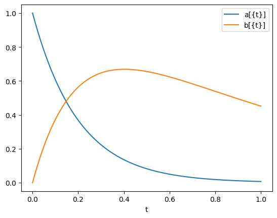
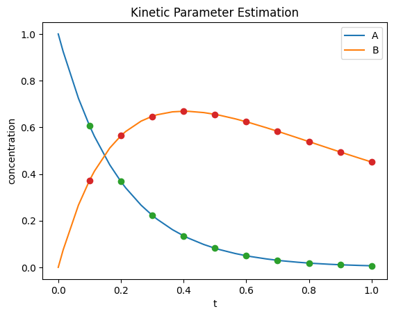

<!DOCTYPE html>


<html lang="en" data-content_root="../../" >

  <head>
    <meta charset="utf-8" />
    <meta name="viewport" content="width=device-width, initial-scale=1.0" /><meta name="viewport" content="width=device-width, initial-scale=1" />

    <title>Parameter Estimation 2 &#8212; Pyomo Workshop</title>
  
  
  
  <script data-cfasync="false">
    document.documentElement.dataset.mode = localStorage.getItem("mode") || "";
    document.documentElement.dataset.theme = localStorage.getItem("theme") || "";
  </script>
  
  <!-- Loaded before other Sphinx assets -->
  <link href="../../_static/styles/theme.css?digest=dfe6caa3a7d634c4db9b" rel="stylesheet" />
<link href="../../_static/styles/bootstrap.css?digest=dfe6caa3a7d634c4db9b" rel="stylesheet" />
<link href="../../_static/styles/pydata-sphinx-theme.css?digest=dfe6caa3a7d634c4db9b" rel="stylesheet" />

  
  <link href="../../_static/vendor/fontawesome/6.5.2/css/all.min.css?digest=dfe6caa3a7d634c4db9b" rel="stylesheet" />
  <link rel="preload" as="font" type="font/woff2" crossorigin href="../../_static/vendor/fontawesome/6.5.2/webfonts/fa-solid-900.woff2" />
<link rel="preload" as="font" type="font/woff2" crossorigin href="../../_static/vendor/fontawesome/6.5.2/webfonts/fa-brands-400.woff2" />
<link rel="preload" as="font" type="font/woff2" crossorigin href="../../_static/vendor/fontawesome/6.5.2/webfonts/fa-regular-400.woff2" />

    <link rel="stylesheet" type="text/css" href="../../_static/pygments.css?v=fa44fd50" />
    <link rel="stylesheet" type="text/css" href="../../_static/styles/sphinx-book-theme.css?v=a3416100" />
    <link rel="stylesheet" type="text/css" href="../../_static/togglebutton.css?v=13237357" />
    <link rel="stylesheet" type="text/css" href="../../_static/copybutton.css?v=76b2166b" />
    <link rel="stylesheet" type="text/css" href="../../_static/mystnb.4510f1fc1dee50b3e5859aac5469c37c29e427902b24a333a5f9fcb2f0b3ac41.css" />
    <link rel="stylesheet" type="text/css" href="../../_static/sphinx-thebe.css?v=4fa983c6" />
    <link rel="stylesheet" type="text/css" href="../../_static/sphinx-design.min.css?v=95c83b7e" />
  
  <!-- Pre-loaded scripts that we'll load fully later -->
  <link rel="preload" as="script" href="../../_static/scripts/bootstrap.js?digest=dfe6caa3a7d634c4db9b" />
<link rel="preload" as="script" href="../../_static/scripts/pydata-sphinx-theme.js?digest=dfe6caa3a7d634c4db9b" />
  <script src="../../_static/vendor/fontawesome/6.5.2/js/all.min.js?digest=dfe6caa3a7d634c4db9b"></script>

    <script src="../../_static/documentation_options.js?v=9eb32ce0"></script>
    <script src="../../_static/doctools.js?v=9a2dae69"></script>
    <script src="../../_static/sphinx_highlight.js?v=dc90522c"></script>
    <script src="../../_static/clipboard.min.js?v=a7894cd8"></script>
    <script src="../../_static/copybutton.js?v=f281be69"></script>
    <script src="../../_static/scripts/sphinx-book-theme.js?v=887ef09a"></script>
    <script>let toggleHintShow = 'Click to show';</script>
    <script>let toggleHintHide = 'Click to hide';</script>
    <script>let toggleOpenOnPrint = 'true';</script>
    <script src="../../_static/togglebutton.js?v=4a39c7ea"></script>
    <script>var togglebuttonSelector = '.toggle, .admonition.dropdown';</script>
    <script src="../../_static/design-tabs.js?v=f930bc37"></script>
    <script>const THEBE_JS_URL = "https://unpkg.com/thebe@0.8.2/lib/index.js"; const thebe_selector = ".thebe,.cell"; const thebe_selector_input = "pre"; const thebe_selector_output = ".output, .cell_output"</script>
    <script async="async" src="../../_static/sphinx-thebe.js?v=c100c467"></script>
    <script>var togglebuttonSelector = '.toggle, .admonition.dropdown';</script>
    <script>const THEBE_JS_URL = "https://unpkg.com/thebe@0.8.2/lib/index.js"; const thebe_selector = ".thebe,.cell"; const thebe_selector_input = "pre"; const thebe_selector_output = ".output, .cell_output"</script>
    <script>DOCUMENTATION_OPTIONS.pagename = 'Material/Dynamic Exercises/param_est2';</script>
    <link rel="index" title="Index" href="../../genindex.html" />
    <link rel="search" title="Search" href="../../search.html" />
    <link rel="next" title="Small collocation example" href="small_colloc.html" />
    <link rel="prev" title="Parameter Estimation 1" href="param_est1.html" />
  <meta name="viewport" content="width=device-width, initial-scale=1"/>
  <meta name="docsearch:language" content="en"/>
  </head>
  
  
  <body data-bs-spy="scroll" data-bs-target=".bd-toc-nav" data-offset="180" data-bs-root-margin="0px 0px -60%" data-default-mode="">

  
  
  <div id="pst-skip-link" class="skip-link d-print-none"><a href="#main-content">Skip to main content</a></div>
  
  <div id="pst-scroll-pixel-helper"></div>
  
  <button type="button" class="btn rounded-pill" id="pst-back-to-top">
    <i class="fa-solid fa-arrow-up"></i>Back to top</button>

  
  <input type="checkbox"
          class="sidebar-toggle"
          id="pst-primary-sidebar-checkbox"/>
  <label class="overlay overlay-primary" for="pst-primary-sidebar-checkbox"></label>
  
  <input type="checkbox"
          class="sidebar-toggle"
          id="pst-secondary-sidebar-checkbox"/>
  <label class="overlay overlay-secondary" for="pst-secondary-sidebar-checkbox"></label>
  
  <div class="search-button__wrapper">
    <div class="search-button__overlay"></div>
    <div class="search-button__search-container">
<form class="bd-search d-flex align-items-center"
      action="../../search.html"
      method="get">
  <i class="fa-solid fa-magnifying-glass"></i>
  <input type="search"
         class="form-control"
         name="q"
         id="search-input"
         placeholder="Search this book..."
         aria-label="Search this book..."
         autocomplete="off"
         autocorrect="off"
         autocapitalize="off"
         spellcheck="false"/>
  <span class="search-button__kbd-shortcut"><kbd class="kbd-shortcut__modifier">Ctrl</kbd>+<kbd>K</kbd></span>
</form></div>
  </div>

  <div class="pst-async-banner-revealer d-none">
  <aside id="bd-header-version-warning" class="d-none d-print-none" aria-label="Version warning"></aside>
</div>

  
    <header class="bd-header navbar navbar-expand-lg bd-navbar d-print-none">
    </header>
  

  <div class="bd-container">
    <div class="bd-container__inner bd-page-width">
      
      
      
      <div class="bd-sidebar-primary bd-sidebar">
        

  
  <div class="sidebar-header-items sidebar-primary__section">
    
    
    
    
  </div>
  
    <div class="sidebar-primary-items__start sidebar-primary__section">
        <div class="sidebar-primary-item">

  
    
  

<a class="navbar-brand logo" href="../../intro.html">
  
  
  
  
  
    
    
      
    
    
    
    <script>document.write(``);</script>
  
  
</a></div>
        <div class="sidebar-primary-item">

 <script>
 document.write(`
   <button class="btn search-button-field search-button__button" title="Search" aria-label="Search" data-bs-placement="bottom" data-bs-toggle="tooltip">
    <i class="fa-solid fa-magnifying-glass"></i>
    <span class="search-button__default-text">Search</span>
    <span class="search-button__kbd-shortcut"><kbd class="kbd-shortcut__modifier">Ctrl</kbd>+<kbd class="kbd-shortcut__modifier">K</kbd></span>
   </button>
 `);
 </script></div>
        <div class="sidebar-primary-item"><nav class="bd-links bd-docs-nav" aria-label="Main">
    <div class="bd-toc-item navbar-nav active">
        
        <ul class="nav bd-sidenav bd-sidenav__home-link">
            <li class="toctree-l1">
                <a class="reference internal" href="../../intro.html">
                    Pyomo Workshop
                </a>
            </li>
        </ul>
        <ul class="current nav bd-sidenav">
<li class="toctree-l1 has-children"><a class="reference internal" href="../Pyomo%20Fundamentals.html">Pyomo Fundamentals</a><details><summary><span class="toctree-toggle" role="presentation"><i class="fa-solid fa-chevron-down"></i></span></summary><ul>
<li class="toctree-l2 has-children"><a class="reference internal" href="../Pyomo%20Fundamentals/Exercises%201.html">Exercises 1</a><details><summary><span class="toctree-toggle" role="presentation"><i class="fa-solid fa-chevron-down"></i></span></summary><ul>
<li class="toctree-l3"><a class="reference internal" href="../Pyomo%20Fundamentals/1.1%20Knapsack%20Example.html">1.1 Knapsack example:</a></li>
<li class="toctree-l3"><a class="reference internal" href="../Pyomo%20Fundamentals/1.2%20Knapsack%20with%20improved%20printing.html">1.2 Knapsack with improved printing:</a></li>
<li class="toctree-l3"><a class="reference internal" href="../Pyomo%20Fundamentals/1.3%20Changing%20data.html">1.3 Changing data:</a></li>
<li class="toctree-l3"><a class="reference internal" href="../Pyomo%20Fundamentals/1.4%20Loading%20data%20from%20Excel.html">1.4 Loading data from Excel:</a></li>
<li class="toctree-l3"><a class="reference internal" href="../Pyomo%20Fundamentals/1.5%20NLP%20vs%20MIP.html">1.5 NLP vs MIP:</a></li>
</ul>
</details></li>
<li class="toctree-l2 has-children"><a class="reference internal" href="../Pyomo%20Fundamentals/Exercises%202.html">Exercises 2</a><details><summary><span class="toctree-toggle" role="presentation"><i class="fa-solid fa-chevron-down"></i></span></summary><ul>
<li class="toctree-l3"><a class="reference internal" href="../Pyomo%20Fundamentals/2.1%20Knapsack%20problem%20with%20rules.html">2.1 Knapsack problem with rules:</a></li>
<li class="toctree-l3"><a class="reference internal" href="../Pyomo%20Fundamentals/2.2%20Integer%20formulation%20of%20the%20knapsack%20problem.html">2.2 Integer formulation of the knapsack problem:</a></li>
</ul>
</details></li>
<li class="toctree-l2 has-children"><a class="reference internal" href="../Pyomo%20Fundamentals/Exercises%203.html">Exercises 3</a><details><summary><span class="toctree-toggle" role="presentation"><i class="fa-solid fa-chevron-down"></i></span></summary><ul>
<li class="toctree-l3"><a class="reference internal" href="../Pyomo%20Fundamentals/3.1%20Using%20the%20decorator%20notation%20for%20rules.html">3.1 Using the decorator notation for rules:</a></li>
<li class="toctree-l3"><a class="reference internal" href="../Pyomo%20Fundamentals/3.2%20Changing%20Parameter%20values.html">3.2 Changing Parameter values:</a></li>
<li class="toctree-l3"><a class="reference internal" href="../Pyomo%20Fundamentals/3.3%20Integer%20cuts.html">3.3 Integer cuts:</a></li>
<li class="toctree-l3"><a class="reference internal" href="../Pyomo%20Fundamentals/3.4%20Putting%20it%20all%20together%20with%20the%20lot%20sizing%20example.html">3.4 Putting it all together with the lot sizing example: (Hart et al., 2017)</a></li>
</ul>
</details></li>
</ul>
</details></li>
<li class="toctree-l1 has-children"><a class="reference internal" href="../Nonlinear%20Exercises.html">Nonlinear Exercises</a><details><summary><span class="toctree-toggle" role="presentation"><i class="fa-solid fa-chevron-down"></i></span></summary><ul>
<li class="toctree-l2"><a class="reference internal" href="../Nonlinear%20Exercises/1.1%20Alternative%20Initialization.html">1.1 Alternative Initialization:</a></li>
<li class="toctree-l2"><a class="reference internal" href="../Nonlinear%20Exercises/1.2%20Evaluation%20errors.html">1.2 Evaluation errors:</a></li>
<li class="toctree-l2"><a class="reference internal" href="../Nonlinear%20Exercises/1.3%20Alternative%20Formulations.html">1.3 Alternative Formulations:</a></li>
<li class="toctree-l2"><a class="reference internal" href="../Nonlinear%20Exercises/1.4%20Reactor%20design%20problem.html">1.4 Reactor design problem (Hart et al., 2017; Bequette, 2003):</a></li>
</ul>
</details></li>
<li class="toctree-l1 current active has-children"><a class="reference internal" href="../Dynamic%20Exercises.html">Dynamic Exercises</a><details open="open"><summary><span class="toctree-toggle" role="presentation"><i class="fa-solid fa-chevron-down"></i></span></summary><ul class="current">
<li class="toctree-l2"><a class="reference internal" href="param_est1.html">Parameter Estimation 1</a></li>
<li class="toctree-l2 current active"><a class="current reference internal" href="#">Parameter Estimation 2</a></li>
<li class="toctree-l2"><a class="reference internal" href="small_colloc.html">Small collocation example</a></li>
<li class="toctree-l2"><a class="reference internal" href="colloc_matrix.html">Collocation Matrix</a></li>
<li class="toctree-l2"><a class="reference internal" href="small_dae.html">Small Dae Example</a></li>
<li class="toctree-l2"><a class="reference internal" href="small_findiff.html">Small Find Diff example</a></li>
</ul>
</details></li>
<li class="toctree-l1 has-children"><a class="reference internal" href="../GDP%20Exercises.html">GDP Exercises</a><details><summary><span class="toctree-toggle" role="presentation"><i class="fa-solid fa-chevron-down"></i></span></summary><ul>
<li class="toctree-l2"><a class="reference internal" href="../GDP%20Exercises/strip_packing.html">Strip Packing</a></li>
</ul>
</details></li>
<li class="toctree-l1"><a class="reference internal" href="../References.html">References</a></li>
</ul>

    </div>
</nav></div>
    </div>
  
  
  <div class="sidebar-primary-items__end sidebar-primary__section">
  </div>
  
  <div id="rtd-footer-container"></div>


      </div>
      
      <main id="main-content" class="bd-main" role="main">
        
        

<div class="sbt-scroll-pixel-helper"></div>

          <div class="bd-content">
            <div class="bd-article-container">
              
              <div class="bd-header-article d-print-none">
<div class="header-article-items header-article__inner">
  
    <div class="header-article-items__start">
      
        <div class="header-article-item"><button class="sidebar-toggle primary-toggle btn btn-sm" title="Toggle primary sidebar" data-bs-placement="bottom" data-bs-toggle="tooltip">
  <span class="fa-solid fa-bars"></span>
</button></div>
      
    </div>
  
  
    <div class="header-article-items__end">
      
        <div class="header-article-item">

<div class="article-header-buttons">


<div class="dropdown dropdown-launch-buttons">
  <button class="btn dropdown-toggle" type="button" data-bs-toggle="dropdown" aria-expanded="false" aria-label="Launch interactive content">
    <i class="fas fa-rocket"></i>
  </button>
  <ul class="dropdown-menu">
      
      
      
      <li><a href="https://colab.research.google.com/github/SECQUOIA/pyomo_jupyter_book/blob/main/Material/Dynamic Exercises/param_est2.ipynb" target="_blank"
   class="btn btn-sm dropdown-item"
   title="Launch on Colab"
   data-bs-placement="left" data-bs-toggle="tooltip"
>
  

<span class="btn__icon-container">
  
    
  </span>
<span class="btn__text-container">Colab</span>
</a>
</li>
      
  </ul>
</div>


<div class="dropdown dropdown-source-buttons">
  <button class="btn dropdown-toggle" type="button" data-bs-toggle="dropdown" aria-expanded="false" aria-label="Source repositories">
    <i class="fab fa-github"></i>
  </button>
  <ul class="dropdown-menu">
      
      
      
      <li><a href="https://github.com/SECQUOIA/pyomo_jupyter_book" target="_blank"
   class="btn btn-sm btn-source-repository-button dropdown-item"
   title="Source repository"
   data-bs-placement="left" data-bs-toggle="tooltip"
>
  

<span class="btn__icon-container">
  <i class="fab fa-github"></i>
  </span>
<span class="btn__text-container">Repository</span>
</a>
</li>
      
      
      
      
      <li><a href="https://github.com/SECQUOIA/pyomo_jupyter_book/issues/new?title=Issue%20on%20page%20%2FMaterial/Dynamic Exercises/param_est2.html&body=Your%20issue%20content%20here." target="_blank"
   class="btn btn-sm btn-source-issues-button dropdown-item"
   title="Open an issue"
   data-bs-placement="left" data-bs-toggle="tooltip"
>
  

<span class="btn__icon-container">
  <i class="fas fa-lightbulb"></i>
  </span>
<span class="btn__text-container">Open issue</span>
</a>
</li>
      
  </ul>
</div>


<div class="dropdown dropdown-download-buttons">
  <button class="btn dropdown-toggle" type="button" data-bs-toggle="dropdown" aria-expanded="false" aria-label="Download this page">
    <i class="fas fa-download"></i>
  </button>
  <ul class="dropdown-menu">
      
      
      
      <li><a href="../../_sources/Material/Dynamic Exercises/param_est2.ipynb" target="_blank"
   class="btn btn-sm btn-download-source-button dropdown-item"
   title="Download source file"
   data-bs-placement="left" data-bs-toggle="tooltip"
>
  

<span class="btn__icon-container">
  <i class="fas fa-file"></i>
  </span>
<span class="btn__text-container">.ipynb</span>
</a>
</li>
      
      
      
      
      <li>
<button onclick="window.print()"
  class="btn btn-sm btn-download-pdf-button dropdown-item"
  title="Print to PDF"
  data-bs-placement="left" data-bs-toggle="tooltip"
>
  

<span class="btn__icon-container">
  <i class="fas fa-file-pdf"></i>
  </span>
<span class="btn__text-container">.pdf</span>
</button>
</li>
      
  </ul>
</div>


<button onclick="toggleFullScreen()"
  class="btn btn-sm btn-fullscreen-button"
  title="Fullscreen mode"
  data-bs-placement="bottom" data-bs-toggle="tooltip"
>
  

<span class="btn__icon-container">
  <i class="fas fa-expand"></i>
  </span>

</button>


<script>
document.write(`
  <button class="btn btn-sm nav-link pst-navbar-icon theme-switch-button" title="light/dark" aria-label="light/dark" data-bs-placement="bottom" data-bs-toggle="tooltip">
    <i class="theme-switch fa-solid fa-sun fa-lg" data-mode="light"></i>
    <i class="theme-switch fa-solid fa-moon fa-lg" data-mode="dark"></i>
    <i class="theme-switch fa-solid fa-circle-half-stroke fa-lg" data-mode="auto"></i>
  </button>
`);
</script>


<script>
document.write(`
  <button class="btn btn-sm pst-navbar-icon search-button search-button__button" title="Search" aria-label="Search" data-bs-placement="bottom" data-bs-toggle="tooltip">
    <i class="fa-solid fa-magnifying-glass fa-lg"></i>
  </button>
`);
</script>

</div></div>
      
    </div>
  
</div>
</div>
              
              

<div id="jb-print-docs-body" class="onlyprint">
    <h1>Parameter Estimation 2</h1>
    <!-- Table of contents -->
    <div id="print-main-content">
        <div id="jb-print-toc">
            
        </div>
    </div>
</div>

              
                
<div id="searchbox"></div>
                <article class="bd-article">
                  
  <section id="parameter-estimation-2">
<h1>Parameter Estimation 2<a class="headerlink" href="#parameter-estimation-2" title="Link to this heading">#</a></h1>
<p>Here we work through an example of Kinetic Parameter Estimation.</p>
<p>First we simulate the kinematic behaviour</p>
<div class="cell docutils container">
<div class="cell_input docutils container">
<div class="highlight-ipython3 notranslate"><div class="highlight"><pre><span></span><span class="kn">import</span> <span class="nn">pyomo.environ</span> <span class="k">as</span> <span class="nn">pyo</span>
<span class="kn">from</span> <span class="nn">pyomo.dae</span> <span class="kn">import</span> <span class="n">ContinuousSet</span><span class="p">,</span> <span class="n">DerivativeVar</span><span class="p">,</span> <span class="n">Simulator</span>
<span class="kn">import</span> <span class="nn">scipy</span>

<span class="n">m</span> <span class="o">=</span> <span class="n">pyo</span><span class="o">.</span><span class="n">ConcreteModel</span><span class="p">()</span>

<span class="n">m</span><span class="o">.</span><span class="n">t</span> <span class="o">=</span> <span class="n">ContinuousSet</span><span class="p">(</span><span class="n">bounds</span><span class="o">=</span><span class="p">(</span><span class="mi">0</span><span class="p">,</span><span class="mi">1</span><span class="p">))</span>
<span class="n">m</span><span class="o">.</span><span class="n">a</span> <span class="o">=</span> <span class="n">pyo</span><span class="o">.</span><span class="n">Var</span><span class="p">(</span><span class="n">m</span><span class="o">.</span><span class="n">t</span><span class="p">)</span>
<span class="n">m</span><span class="o">.</span><span class="n">b</span> <span class="o">=</span> <span class="n">pyo</span><span class="o">.</span><span class="n">Var</span><span class="p">(</span><span class="n">m</span><span class="o">.</span><span class="n">t</span><span class="p">)</span>

<span class="n">m</span><span class="o">.</span><span class="n">k1</span> <span class="o">=</span> <span class="n">pyo</span><span class="o">.</span><span class="n">Param</span><span class="p">(</span><span class="n">initialize</span><span class="o">=</span><span class="mi">5</span><span class="p">)</span>
<span class="n">m</span><span class="o">.</span><span class="n">k2</span> <span class="o">=</span> <span class="n">pyo</span><span class="o">.</span><span class="n">Param</span><span class="p">(</span><span class="n">initialize</span><span class="o">=</span><span class="mi">1</span><span class="p">)</span>

<span class="n">m</span><span class="o">.</span><span class="n">dadt</span> <span class="o">=</span> <span class="n">DerivativeVar</span><span class="p">(</span><span class="n">m</span><span class="o">.</span><span class="n">a</span><span class="p">)</span>
<span class="n">m</span><span class="o">.</span><span class="n">dbdt</span> <span class="o">=</span> <span class="n">DerivativeVar</span><span class="p">(</span><span class="n">m</span><span class="o">.</span><span class="n">b</span><span class="p">)</span>

<span class="n">m</span><span class="o">.</span><span class="n">a</span><span class="p">[</span><span class="mi">0</span><span class="p">]</span><span class="o">.</span><span class="n">fix</span><span class="p">(</span><span class="mi">1</span><span class="p">)</span>
<span class="n">m</span><span class="o">.</span><span class="n">b</span><span class="p">[</span><span class="mi">0</span><span class="p">]</span><span class="o">.</span><span class="n">fix</span><span class="p">(</span><span class="mi">0</span><span class="p">)</span>

<span class="k">def</span> <span class="nf">_da</span><span class="p">(</span><span class="n">m</span><span class="p">,</span> <span class="n">t</span><span class="p">):</span>
    <span class="k">return</span> <span class="n">m</span><span class="o">.</span><span class="n">dadt</span><span class="p">[</span><span class="n">t</span><span class="p">]</span> <span class="o">==</span> <span class="o">-</span><span class="n">m</span><span class="o">.</span><span class="n">k1</span><span class="o">*</span><span class="n">m</span><span class="o">.</span><span class="n">a</span><span class="p">[</span><span class="n">t</span><span class="p">]</span>
<span class="n">m</span><span class="o">.</span><span class="n">da_con</span> <span class="o">=</span> <span class="n">pyo</span><span class="o">.</span><span class="n">Constraint</span><span class="p">(</span><span class="n">m</span><span class="o">.</span><span class="n">t</span><span class="p">,</span> <span class="n">rule</span><span class="o">=</span><span class="n">_da</span><span class="p">)</span>

<span class="k">def</span> <span class="nf">_db</span><span class="p">(</span><span class="n">m</span><span class="p">,</span> <span class="n">t</span><span class="p">):</span>
    <span class="k">return</span> <span class="n">m</span><span class="o">.</span><span class="n">dbdt</span><span class="p">[</span><span class="n">t</span><span class="p">]</span> <span class="o">==</span> <span class="n">m</span><span class="o">.</span><span class="n">k1</span><span class="o">*</span><span class="n">m</span><span class="o">.</span><span class="n">a</span><span class="p">[</span><span class="n">t</span><span class="p">]</span> <span class="o">-</span> <span class="n">m</span><span class="o">.</span><span class="n">k2</span><span class="o">*</span><span class="n">m</span><span class="o">.</span><span class="n">b</span><span class="p">[</span><span class="n">t</span><span class="p">]</span>
<span class="n">m</span><span class="o">.</span><span class="n">db_con</span> <span class="o">=</span> <span class="n">pyo</span><span class="o">.</span><span class="n">Constraint</span><span class="p">(</span><span class="n">m</span><span class="o">.</span><span class="n">t</span><span class="p">,</span> <span class="n">rule</span><span class="o">=</span><span class="n">_db</span><span class="p">)</span>

<span class="n">mysim</span> <span class="o">=</span> <span class="n">Simulator</span><span class="p">(</span><span class="n">m</span><span class="p">,</span> <span class="n">package</span><span class="o">=</span><span class="s1">&#39;scipy&#39;</span><span class="p">)</span>
<span class="n">tsim</span><span class="p">,</span> <span class="n">profiles</span> <span class="o">=</span> <span class="n">mysim</span><span class="o">.</span><span class="n">simulate</span><span class="p">(</span><span class="n">integrator</span><span class="o">=</span><span class="s1">&#39;vode&#39;</span><span class="p">,</span> <span class="n">numpoints</span><span class="o">=</span><span class="mi">100</span><span class="p">)</span>

<span class="kn">import</span> <span class="nn">matplotlib.pyplot</span> <span class="k">as</span> <span class="nn">plt</span>

<span class="n">varorder</span> <span class="o">=</span> <span class="n">mysim</span><span class="o">.</span><span class="n">get_variable_order</span><span class="p">()</span>
<span class="k">for</span> <span class="n">idx</span><span class="p">,</span> <span class="n">v</span> <span class="ow">in</span> <span class="nb">enumerate</span><span class="p">(</span><span class="n">varorder</span><span class="p">):</span>
    <span class="n">plt</span><span class="o">.</span><span class="n">plot</span><span class="p">(</span><span class="n">tsim</span><span class="p">,</span> <span class="n">profiles</span><span class="p">[:,</span> <span class="n">idx</span><span class="p">],</span> <span class="n">label</span><span class="o">=</span><span class="n">v</span><span class="p">)</span>

<span class="n">plt</span><span class="o">.</span><span class="n">xlabel</span><span class="p">(</span><span class="s1">&#39;t&#39;</span><span class="p">)</span>
<span class="n">plt</span><span class="o">.</span><span class="n">legend</span><span class="p">(</span><span class="n">loc</span><span class="o">=</span><span class="s1">&#39;best&#39;</span><span class="p">)</span>
<span class="n">plt</span><span class="o">.</span><span class="n">show</span><span class="p">()</span>

<span class="n">plt</span><span class="o">.</span><span class="n">show</span><span class="p">()</span>
</pre></div>
</div>
</div>
<div class="cell_output docutils container">

</div>
</div>
<p>Now let’s estimate the parameters</p>
<div class="cell docutils container">
<div class="cell_input docutils container">
<div class="highlight-ipython3 notranslate"><div class="highlight"><pre><span></span><span class="kn">import</span> <span class="nn">pyomo.environ</span> <span class="k">as</span> <span class="nn">pyo</span>
<span class="kn">from</span> <span class="nn">pyomo.dae</span> <span class="kn">import</span> <span class="n">ContinuousSet</span><span class="p">,</span> <span class="n">DerivativeVar</span>

<span class="n">a_conc</span> <span class="o">=</span> <span class="p">{</span><span class="mf">0.1</span><span class="p">:</span><span class="mf">0.606</span><span class="p">,</span> <span class="mf">0.2</span><span class="p">:</span><span class="mf">0.368</span><span class="p">,</span> <span class="mf">0.3</span><span class="p">:</span><span class="mf">0.223</span><span class="p">,</span> <span class="mf">0.4</span><span class="p">:</span><span class="mf">0.135</span><span class="p">,</span> <span class="mf">0.5</span><span class="p">:</span><span class="mf">0.082</span><span class="p">,</span>
          <span class="mf">0.6</span><span class="p">:</span><span class="mf">0.05</span><span class="p">,</span> <span class="mf">0.7</span><span class="p">:</span><span class="mf">0.03</span><span class="p">,</span> <span class="mf">0.8</span><span class="p">:</span><span class="mf">0.018</span><span class="p">,</span> <span class="mf">0.9</span><span class="p">:</span><span class="mf">0.011</span><span class="p">,</span> <span class="mf">1.0</span><span class="p">:</span><span class="mf">0.007</span><span class="p">}</span>

<span class="n">b_conc</span> <span class="o">=</span> <span class="p">{</span><span class="mf">0.1</span><span class="p">:</span><span class="mf">0.373</span><span class="p">,</span> <span class="mf">0.2</span><span class="p">:</span><span class="mf">0.564</span><span class="p">,</span> <span class="mf">0.3</span><span class="p">:</span><span class="mf">0.647</span><span class="p">,</span> <span class="mf">0.4</span><span class="p">:</span><span class="mf">0.669</span><span class="p">,</span> <span class="mf">0.5</span><span class="p">:</span><span class="mf">0.656</span><span class="p">,</span>
          <span class="mf">0.6</span><span class="p">:</span><span class="mf">0.624</span><span class="p">,</span> <span class="mf">0.7</span><span class="p">:</span><span class="mf">0.583</span><span class="p">,</span> <span class="mf">0.8</span><span class="p">:</span><span class="mf">0.539</span><span class="p">,</span> <span class="mf">0.9</span><span class="p">:</span><span class="mf">0.494</span><span class="p">,</span> <span class="mf">1.0</span><span class="p">:</span><span class="mf">0.451</span><span class="p">}</span>

<span class="n">m</span> <span class="o">=</span> <span class="n">pyo</span><span class="o">.</span><span class="n">ConcreteModel</span><span class="p">()</span>

<span class="n">m</span><span class="o">.</span><span class="n">meas_time</span> <span class="o">=</span> <span class="n">pyo</span><span class="o">.</span><span class="n">Set</span><span class="p">(</span><span class="n">initialize</span><span class="o">=</span><span class="nb">sorted</span><span class="p">(</span><span class="n">a_conc</span><span class="o">.</span><span class="n">keys</span><span class="p">()),</span><span class="n">ordered</span><span class="o">=</span><span class="kc">True</span><span class="p">)</span>
<span class="n">m</span><span class="o">.</span><span class="n">ameas</span> <span class="o">=</span> <span class="n">pyo</span><span class="o">.</span><span class="n">Param</span><span class="p">(</span><span class="n">m</span><span class="o">.</span><span class="n">meas_time</span><span class="p">,</span> <span class="n">initialize</span><span class="o">=</span><span class="n">a_conc</span><span class="p">)</span>
<span class="n">m</span><span class="o">.</span><span class="n">bmeas</span> <span class="o">=</span> <span class="n">pyo</span><span class="o">.</span><span class="n">Param</span><span class="p">(</span><span class="n">m</span><span class="o">.</span><span class="n">meas_time</span><span class="p">,</span> <span class="n">initialize</span><span class="o">=</span><span class="n">b_conc</span><span class="p">)</span>

<span class="n">m</span><span class="o">.</span><span class="n">time</span> <span class="o">=</span> <span class="n">ContinuousSet</span><span class="p">(</span><span class="n">initialize</span><span class="o">=</span><span class="n">m</span><span class="o">.</span><span class="n">meas_time</span><span class="p">,</span> <span class="n">bounds</span><span class="o">=</span><span class="p">(</span><span class="mi">0</span><span class="p">,</span><span class="mi">1</span><span class="p">))</span>

<span class="n">m</span><span class="o">.</span><span class="n">a</span> <span class="o">=</span> <span class="n">pyo</span><span class="o">.</span><span class="n">Var</span><span class="p">(</span><span class="n">m</span><span class="o">.</span><span class="n">time</span><span class="p">,</span> <span class="n">bounds</span><span class="o">=</span><span class="p">(</span><span class="mi">0</span><span class="p">,</span><span class="mi">1</span><span class="p">))</span>
<span class="n">m</span><span class="o">.</span><span class="n">b</span> <span class="o">=</span> <span class="n">pyo</span><span class="o">.</span><span class="n">Var</span><span class="p">(</span><span class="n">m</span><span class="o">.</span><span class="n">time</span><span class="p">,</span> <span class="n">bounds</span><span class="o">=</span><span class="p">(</span><span class="mi">0</span><span class="p">,</span><span class="mi">1</span><span class="p">))</span>

<span class="n">m</span><span class="o">.</span><span class="n">dadt</span> <span class="o">=</span> <span class="n">DerivativeVar</span><span class="p">(</span><span class="n">m</span><span class="o">.</span><span class="n">a</span><span class="p">)</span>
<span class="n">m</span><span class="o">.</span><span class="n">dbdt</span> <span class="o">=</span> <span class="n">DerivativeVar</span><span class="p">(</span><span class="n">m</span><span class="o">.</span><span class="n">b</span><span class="p">)</span>

<span class="n">m</span><span class="o">.</span><span class="n">k1</span> <span class="o">=</span> <span class="n">pyo</span><span class="o">.</span><span class="n">Var</span><span class="p">()</span>
<span class="n">m</span><span class="o">.</span><span class="n">k2</span> <span class="o">=</span> <span class="n">pyo</span><span class="o">.</span><span class="n">Var</span><span class="p">()</span>

<span class="k">def</span> <span class="nf">_a_diffeq</span><span class="p">(</span><span class="n">m</span><span class="p">,</span><span class="n">t</span><span class="p">):</span>
    <span class="k">return</span> <span class="n">m</span><span class="o">.</span><span class="n">dadt</span><span class="p">[</span><span class="n">t</span><span class="p">]</span> <span class="o">==</span> <span class="o">-</span><span class="n">m</span><span class="o">.</span><span class="n">k1</span><span class="o">*</span><span class="n">m</span><span class="o">.</span><span class="n">a</span><span class="p">[</span><span class="n">t</span><span class="p">]</span>
<span class="n">m</span><span class="o">.</span><span class="n">a_diffeq</span> <span class="o">=</span> <span class="n">pyo</span><span class="o">.</span><span class="n">Constraint</span><span class="p">(</span><span class="n">m</span><span class="o">.</span><span class="n">time</span><span class="p">,</span> <span class="n">rule</span><span class="o">=</span><span class="n">_a_diffeq</span><span class="p">)</span>

<span class="k">def</span> <span class="nf">_b_diffeq</span><span class="p">(</span><span class="n">m</span><span class="p">,</span><span class="n">t</span><span class="p">):</span>
    <span class="k">return</span> <span class="n">m</span><span class="o">.</span><span class="n">dbdt</span><span class="p">[</span><span class="n">t</span><span class="p">]</span> <span class="o">==</span> <span class="n">m</span><span class="o">.</span><span class="n">k1</span><span class="o">*</span><span class="n">m</span><span class="o">.</span><span class="n">a</span><span class="p">[</span><span class="n">t</span><span class="p">]</span> <span class="o">-</span> <span class="n">m</span><span class="o">.</span><span class="n">k2</span><span class="o">*</span><span class="n">m</span><span class="o">.</span><span class="n">b</span><span class="p">[</span><span class="n">t</span><span class="p">]</span>
<span class="n">m</span><span class="o">.</span><span class="n">b_diffeq</span> <span class="o">=</span> <span class="n">pyo</span><span class="o">.</span><span class="n">Constraint</span><span class="p">(</span><span class="n">m</span><span class="o">.</span><span class="n">time</span><span class="p">,</span> <span class="n">rule</span><span class="o">=</span><span class="n">_b_diffeq</span><span class="p">)</span>

<span class="n">m</span><span class="o">.</span><span class="n">ainit</span> <span class="o">=</span> <span class="n">pyo</span><span class="o">.</span><span class="n">Constraint</span><span class="p">(</span><span class="n">expr</span><span class="o">=</span><span class="n">m</span><span class="o">.</span><span class="n">a</span><span class="p">[</span><span class="mi">0</span><span class="p">]</span><span class="o">==</span><span class="mi">1</span><span class="p">)</span>
<span class="n">m</span><span class="o">.</span><span class="n">binit</span> <span class="o">=</span> <span class="n">pyo</span><span class="o">.</span><span class="n">Constraint</span><span class="p">(</span><span class="n">expr</span><span class="o">=</span><span class="n">m</span><span class="o">.</span><span class="n">b</span><span class="p">[</span><span class="mi">0</span><span class="p">]</span><span class="o">==</span><span class="mi">0</span><span class="p">)</span>

<span class="k">def</span> <span class="nf">_obj</span><span class="p">(</span><span class="n">m</span><span class="p">):</span>
    <span class="k">return</span> <span class="nb">sum</span><span class="p">((</span><span class="n">m</span><span class="o">.</span><span class="n">a</span><span class="p">[</span><span class="n">t</span><span class="p">]</span><span class="o">-</span><span class="n">m</span><span class="o">.</span><span class="n">ameas</span><span class="p">[</span><span class="n">t</span><span class="p">])</span><span class="o">**</span><span class="mi">2</span><span class="o">+</span><span class="p">(</span><span class="n">m</span><span class="o">.</span><span class="n">b</span><span class="p">[</span><span class="n">t</span><span class="p">]</span><span class="o">-</span><span class="n">m</span><span class="o">.</span><span class="n">bmeas</span><span class="p">[</span><span class="n">t</span><span class="p">])</span><span class="o">**</span><span class="mi">2</span> <span class="k">for</span> <span class="n">t</span> <span class="ow">in</span> <span class="n">m</span><span class="o">.</span><span class="n">meas_time</span><span class="p">)</span>
<span class="n">m</span><span class="o">.</span><span class="n">obj</span> <span class="o">=</span> <span class="n">pyo</span><span class="o">.</span><span class="n">Objective</span><span class="p">(</span><span class="n">rule</span><span class="o">=</span><span class="n">_obj</span><span class="p">)</span>

<span class="n">discretizer</span> <span class="o">=</span> <span class="n">pyo</span><span class="o">.</span><span class="n">TransformationFactory</span><span class="p">(</span><span class="s1">&#39;dae.collocation&#39;</span><span class="p">)</span>
<span class="n">discretizer</span><span class="o">.</span><span class="n">apply_to</span><span class="p">(</span><span class="n">m</span><span class="p">,</span><span class="n">nfe</span><span class="o">=</span><span class="mi">10</span><span class="p">,</span><span class="n">ncp</span><span class="o">=</span><span class="mi">3</span><span class="p">,</span><span class="n">scheme</span><span class="o">=</span><span class="s1">&#39;LAGRANGE-RADAU&#39;</span><span class="p">)</span>

<span class="n">solver</span> <span class="o">=</span> <span class="n">pyo</span><span class="o">.</span><span class="n">SolverFactory</span><span class="p">(</span><span class="s1">&#39;ipopt&#39;</span><span class="p">)</span>
<span class="n">solver</span><span class="o">.</span><span class="n">solve</span><span class="p">(</span><span class="n">m</span><span class="p">,</span> <span class="n">tee</span><span class="o">=</span><span class="kc">True</span><span class="p">)</span>

<span class="nb">print</span><span class="p">(</span><span class="s1">&#39;k1= &#39;</span><span class="o">+</span><span class="nb">str</span><span class="p">(</span><span class="n">pyo</span><span class="o">.</span><span class="n">value</span><span class="p">(</span><span class="n">m</span><span class="o">.</span><span class="n">k1</span><span class="p">)))</span>
<span class="nb">print</span><span class="p">(</span><span class="s1">&#39;k2= &#39;</span><span class="o">+</span><span class="nb">str</span><span class="p">(</span><span class="n">pyo</span><span class="o">.</span><span class="n">value</span><span class="p">(</span><span class="n">m</span><span class="o">.</span><span class="n">k2</span><span class="p">)))</span>

<span class="n">meas_time</span> <span class="o">=</span> <span class="nb">list</span><span class="p">(</span><span class="n">m</span><span class="o">.</span><span class="n">meas_time</span><span class="p">)</span>
<span class="n">a_meas</span> <span class="o">=</span> <span class="p">[</span><span class="n">pyo</span><span class="o">.</span><span class="n">value</span><span class="p">(</span><span class="n">m</span><span class="o">.</span><span class="n">ameas</span><span class="p">[</span><span class="n">i</span><span class="p">])</span> <span class="k">for</span> <span class="n">i</span> <span class="ow">in</span> <span class="n">m</span><span class="o">.</span><span class="n">meas_time</span><span class="p">]</span>
<span class="n">b_meas</span> <span class="o">=</span> <span class="p">[</span><span class="n">pyo</span><span class="o">.</span><span class="n">value</span><span class="p">(</span><span class="n">m</span><span class="o">.</span><span class="n">bmeas</span><span class="p">[</span><span class="n">i</span><span class="p">])</span> <span class="k">for</span> <span class="n">i</span> <span class="ow">in</span> <span class="n">m</span><span class="o">.</span><span class="n">meas_time</span><span class="p">]</span>

<span class="n">t</span> <span class="o">=</span> <span class="nb">list</span><span class="p">(</span><span class="n">m</span><span class="o">.</span><span class="n">time</span><span class="p">)</span>
<span class="n">a</span> <span class="o">=</span> <span class="p">[</span><span class="n">pyo</span><span class="o">.</span><span class="n">value</span><span class="p">(</span><span class="n">m</span><span class="o">.</span><span class="n">a</span><span class="p">[</span><span class="n">i</span><span class="p">])</span> <span class="k">for</span> <span class="n">i</span> <span class="ow">in</span> <span class="n">m</span><span class="o">.</span><span class="n">time</span><span class="p">]</span>
<span class="n">b</span> <span class="o">=</span> <span class="p">[</span><span class="n">pyo</span><span class="o">.</span><span class="n">value</span><span class="p">(</span><span class="n">m</span><span class="o">.</span><span class="n">b</span><span class="p">[</span><span class="n">i</span><span class="p">])</span> <span class="k">for</span> <span class="n">i</span> <span class="ow">in</span> <span class="n">m</span><span class="o">.</span><span class="n">time</span><span class="p">]</span>
    
<span class="kn">import</span> <span class="nn">matplotlib.pyplot</span> <span class="k">as</span> <span class="nn">plt</span>

<span class="n">plt</span><span class="o">.</span><span class="n">plot</span><span class="p">(</span><span class="n">t</span><span class="p">,</span><span class="n">a</span><span class="p">,</span><span class="n">label</span><span class="o">=</span><span class="s1">&#39;A&#39;</span><span class="p">)</span>
<span class="n">plt</span><span class="o">.</span><span class="n">plot</span><span class="p">(</span><span class="n">t</span><span class="p">,</span><span class="n">b</span><span class="p">,</span><span class="n">label</span><span class="o">=</span><span class="s1">&#39;B&#39;</span><span class="p">)</span>
<span class="n">plt</span><span class="o">.</span><span class="n">plot</span><span class="p">(</span><span class="n">meas_time</span><span class="p">,</span><span class="n">a_meas</span><span class="p">,</span><span class="s1">&#39;o&#39;</span><span class="p">)</span>
<span class="n">plt</span><span class="o">.</span><span class="n">plot</span><span class="p">(</span><span class="n">meas_time</span><span class="p">,</span><span class="n">b_meas</span><span class="p">,</span><span class="s1">&#39;o&#39;</span><span class="p">)</span>
<span class="n">plt</span><span class="o">.</span><span class="n">legend</span><span class="p">(</span><span class="n">loc</span><span class="o">=</span><span class="s1">&#39;best&#39;</span><span class="p">)</span>
<span class="n">plt</span><span class="o">.</span><span class="n">xlabel</span><span class="p">(</span><span class="s1">&#39;t&#39;</span><span class="p">)</span>
<span class="n">plt</span><span class="o">.</span><span class="n">ylabel</span><span class="p">(</span><span class="s1">&#39;concentration&#39;</span><span class="p">)</span>
<span class="n">plt</span><span class="o">.</span><span class="n">title</span><span class="p">(</span><span class="s1">&#39;Kinetic Parameter Estimation&#39;</span><span class="p">)</span>
<span class="n">plt</span><span class="o">.</span><span class="n">show</span><span class="p">()</span>
</pre></div>
</div>
</div>
<div class="cell_output docutils container">
<div class="output stream highlight-myst-ansi notranslate"><div class="highlight"><pre><span></span>Ipopt 3.13.2: 

******************************************************************************
This program contains Ipopt, a library for large-scale nonlinear optimization.
 Ipopt is released as open source code under the Eclipse Public License (EPL).
         For more information visit http://projects.coin-or.org/Ipopt

This version of Ipopt was compiled from source code available at
    https://github.com/IDAES/Ipopt as part of the Institute for the Design of
    Advanced Energy Systems Process Systems Engineering Framework (IDAES PSE
    Framework) Copyright (c) 2018-2019. See https://github.com/IDAES/idaes-pse.

This version of Ipopt was compiled using HSL, a collection of Fortran codes
    for large-scale scientific computation.  All technical papers, sales and
    publicity material resulting from use of the HSL codes within IPOPT must
    contain the following acknowledgement:
        HSL, a collection of Fortran codes for large-scale scientific
        computation. See http://www.hsl.rl.ac.uk.
******************************************************************************

This is Ipopt version 3.13.2, running with linear solver ma27.

Number of nonzeros in equality constraint Jacobian...:      550
Number of nonzeros in inequality constraint Jacobian.:        0
Number of nonzeros in Lagrangian Hessian.............:       82

Total number of variables............................:      126
                     variables with only lower bounds:        0
                variables with lower and upper bounds:       62
                     variables with only upper bounds:        0
Total number of equality constraints.................:      124
Total number of inequality constraints...............:        0
        inequality constraints with only lower bounds:        0
   inequality constraints with lower and upper bounds:        0
        inequality constraints with only upper bounds:        0

iter    objective    inf_pr   inf_du lg(mu)  ||d||  lg(rg) alpha_du alpha_pr  ls
   0  3.6615861e+00 9.90e-01 5.94e-02  -1.0 0.00e+00    -  0.00e+00 0.00e+00   0
   1  3.6629897e+00 9.88e-01 7.45e-01  -1.7 1.87e+02    -  1.01e-02 2.51e-03h  4
   2  3.6603131e+00 9.75e-01 1.30e+00  -1.7 1.72e+02    -  1.69e-02 1.30e-02f  2
   3  3.6608441e+00 9.74e-01 1.33e+01  -1.7 2.68e+02    -  5.93e-02 3.38e-04h  6
   4  3.5037068e+00 8.92e-01 1.43e+01  -1.7 1.09e+02    -  4.56e-02 8.43e-02f  1
   5  3.4924703e+00 8.73e-01 3.43e+02  -1.7 1.49e+02    -  5.89e-01 2.12e-02h  3
   6  3.3768345e+00 7.61e-01 6.01e+02  -1.7 8.52e+01    -  7.87e-02 1.29e-01h  2
   7  3.3421277e+00 7.11e-01 6.56e+02  -1.7 6.92e+01    -  4.48e-01 6.53e-02H  1
   8  3.3131009e+00 6.49e-01 7.61e+02  -1.7 9.22e+01    -  3.90e-02 8.81e-02h  3
   9  3.2866091e+00 5.80e-01 7.80e+02  -1.7 1.21e+02    -  2.37e-01 1.06e-01h  3
iter    objective    inf_pr   inf_du lg(mu)  ||d||  lg(rg) alpha_du alpha_pr  ls
  10  3.0889266e+00 7.63e-01 1.80e+02  -1.7 6.41e+01    -  5.95e-01 9.90e-01H  1
  11  3.1019026e+00 2.49e-01 2.25e+02  -1.7 2.44e+01    -  3.31e-01 9.90e-01h  1
  12  2.6900564e+00 1.11e+01 2.08e+04  -1.7 8.92e+01    -  3.72e-01 9.90e-01h  1
  13  2.5940882e+00 1.04e+01 2.15e+04  -1.7 2.48e+02    -  3.77e-02 3.89e-02h  1
  14  2.5828123e+00 1.03e+01 1.94e+04  -1.7 7.45e+01  -2.0 7.81e-03 6.23e-03h  1
  15  2.6632270e+00 1.26e+01 3.37e+05  -1.7 1.21e+02    -  9.94e-03 2.69e-01f  1
  16  2.7587273e+00 1.19e+01 3.93e+05  -1.7 3.75e+01  -0.7 9.59e-03 6.72e-02h  1
  17  2.7634018e+00 1.19e+01 3.32e+05  -1.7 4.07e+01  -1.1 4.56e-02 1.84e-03h  1
  18  2.9029431e+00 1.15e+01 2.76e+05  -1.7 1.45e+02  -1.6 5.69e-02 2.07e-02h  1
  19  2.9064258e+00 1.15e+01 1.94e+05  -1.7 1.46e+01    -  3.65e-01 1.98e-03h  1
iter    objective    inf_pr   inf_du lg(mu)  ||d||  lg(rg) alpha_du alpha_pr  ls
  20  2.9777374e+00 1.09e+01 2.62e+05  -1.7 9.65e+00    -  1.39e-01 5.63e-02h  1
  21  2.9781355e+00 1.08e+01 2.63e+05  -1.7 8.00e+00    -  2.30e-03 3.28e-04h  2
  22  3.0173366e+00 1.05e+01 2.25e+05  -1.7 6.47e+00    -  4.77e-04 3.45e-02f  2
  23  3.0623429e+00 1.01e+01 4.69e+05  -1.7 6.66e+00    -  3.29e-01 3.84e-02h  3
  24  3.0978360e+00 9.78e+00 4.85e+05  -1.7 6.78e+00    -  7.45e-02 2.96e-02h  3
  25  3.1115805e+00 9.67e+00 6.91e+05  -1.7 6.84e+00    -  3.48e-01 1.13e-02h  4
  26  3.2162648e+00 8.90e+00 6.63e+05  -1.7 6.85e+00    -  1.40e-01 8.01e-02h  1
  27  3.2173800e+00 8.89e+00 6.66e+05  -1.7 7.20e+00    -  8.13e-03 8.57e-04h  1
  28  3.2201926e+00 8.83e+00 6.59e+05  -1.7 3.29e+01    -  5.29e-05 6.29e-03f  1
  29  3.2628230e+00 8.10e+00 5.89e+05  -1.7 3.17e+01    -  4.70e-02 8.35e-02h  1
iter    objective    inf_pr   inf_du lg(mu)  ||d||  lg(rg) alpha_du alpha_pr  ls
  30  3.2633788e+00 8.09e+00 5.96e+05  -1.7 2.40e+01    -  1.97e-02 7.38e-04h  1
  31  3.2630462e+00 8.08e+00 5.95e+05  -1.7 4.97e+01    -  1.43e-05 1.45e-03f  1
  32  3.2712178e+00 7.58e+00 5.52e+05  -1.7 4.12e+01    -  4.76e-02 6.18e-02f  1
  33  3.2713520e+00 7.57e+00 5.54e+05  -1.7 3.50e+01    -  7.06e-03 4.92e-04h  1
  34  3.1338655e+00 3.99e+00 4.64e+05  -1.7 3.06e+02    -  1.22e-04 9.56e-02h  1
  35  3.1335637e+00 3.89e+00 4.55e+05  -1.7 6.09e+01    -  2.86e-02 2.32e-02h  1
  36  3.1335175e+00 3.89e+00 4.55e+05  -1.7 6.01e+01    -  4.95e-04 3.26e-04h  1
  37  3.1335145e+00 3.89e+00 4.76e+05  -1.7 4.48e+01    -  5.28e-02 6.28e-05h  1
  38  3.1241856e+00 3.74e+00 4.43e+05  -1.7 5.23e+01    -  1.60e-04 3.83e-02f  1
  39  3.1171847e+00 3.55e+00 4.16e+05  -1.7 4.84e+01    -  3.90e-02 5.14e-02f  1
iter    objective    inf_pr   inf_du lg(mu)  ||d||  lg(rg) alpha_du alpha_pr  ls
  40  3.1151185e+00 3.38e+00 3.78e+05  -1.7 4.54e+01    -  5.66e-04 4.92e-02h  1
  41  3.1151671e+00 3.38e+00 3.79e+05  -1.7 4.23e+01    -  3.53e-03 4.13e-04h  1
  42  3.1154077e+00 3.15e+00 3.28e+05  -1.7 4.45e+01    -  2.27e-04 6.71e-02f  1
  43  3.1155580e+00 3.15e+00 3.32e+05  -1.7 4.14e+01    -  1.13e-02 4.63e-04h  1
  44  3.1167287e+00 3.12e+00 3.26e+05  -1.7 4.37e+01    -  4.19e-05 8.90e-03h  1
  45  3.1215623e+00 3.05e+00 3.27e+05  -1.7 4.35e+01    -  4.96e-02 2.54e-02f  1
  46  3.1220772e+00 3.04e+00 3.26e+05  -1.7 4.41e+01    -  6.82e-05 1.62e-03h  1
  47  3.1288276e+00 2.98e+00 3.15e+05  -1.7 4.42e+01    -  1.02e-02 2.09e-02f  1
  48  3.1399751e+00 2.89e+00 2.93e+05  -1.7 4.64e+01    -  1.14e-04 3.23e-02f  1
  49  3.1401919e+00 2.89e+00 2.93e+05  -1.7 5.09e+01    -  7.51e-04 3.17e-04h  1
iter    objective    inf_pr   inf_du lg(mu)  ||d||  lg(rg) alpha_du alpha_pr  ls
  50  3.1487223e+00 2.84e+00 2.81e+05  -1.7 5.06e+01    -  5.51e-04 1.93e-02f  1
  51  3.1489213e+00 2.83e+00 2.81e+05  -1.7 5.54e+01    -  7.22e-04 2.81e-04h  1
  52  3.1573381e+00 2.80e+00 2.75e+05  -1.7 5.50e+01    -  5.17e-03 1.31e-02f  1
  53  3.1707003e+00 2.74e+00 2.61e+05  -1.7 5.78e+01    -  1.58e-04 2.25e-02f  1
  54  3.1715785e+00 2.74e+00 2.60e+05  -1.7 6.38e+01    -  1.13e-03 1.29e-03h  1
  55  3.1802298e+00 2.71e+00 2.53e+05  -1.7 6.32e+01    -  4.01e-03 1.37e-02f  1
  56  3.1895629e+00 2.68e+00 2.54e+05  -1.7 6.82e+01    -  2.38e-02 1.21e-02f  1
  57  3.1915021e+00 2.67e+00 2.53e+05  -1.7 6.84e+01    -  9.11e-04 2.90e-03h  1
  58  3.2055975e+00 2.63e+00 2.44e+05  -1.7 6.96e+01    -  7.31e-03 1.95e-02f  1
  59  3.2058320e+00 2.63e+00 2.44e+05  -1.7 8.39e+01    -  1.44e-03 2.13e-04h  1
iter    objective    inf_pr   inf_du lg(mu)  ||d||  lg(rg) alpha_du alpha_pr  ls
  60  3.2175211e+00 2.58e+00 2.32e+05  -1.7 6.77e+01    -  5.29e-04 2.05e-02f  1
  61  3.2177375e+00 2.58e+00 2.33e+05  -1.7 7.99e+01    -  1.92e-03 2.46e-04h  1
  62  3.2318545e+00 2.54e+00 2.37e+05  -1.7 7.45e+01    -  4.33e-02 1.91e-02f  1
  63  3.2320641e+00 2.54e+00 2.37e+05  -1.7 9.03e+01    -  2.93e-03 2.01e-04h  1
  64  3.2606218e+00 2.46e+00 2.13e+05  -1.7 7.38e+01    -  1.52e-04 4.35e-02f  1
  65  3.2611836e+00 2.46e+00 2.16e+05  -1.7 1.13e+02    -  1.09e-02 4.56e-04h  1
  66  3.2892990e+00 2.39e+00 1.92e+05  -1.7 8.25e+01    -  9.64e-05 4.37e-02f  1
  67  3.2898497e+00 2.38e+00 1.93e+05  -1.7 1.22e+02    -  3.87e-03 5.55e-04h  1
  68  3.3218374e+00 2.32e+00 1.75e+05  -1.7 1.10e+02    -  6.21e-03 3.84e-02f  1
  69  3.3937825e+00 2.04e+00 6.58e+04  -1.7 7.37e+01    -  4.33e-04 4.11e-01h  1
iter    objective    inf_pr   inf_du lg(mu)  ||d||  lg(rg) alpha_du alpha_pr  ls
  70  3.4444856e+00 2.04e+00 6.60e+04  -1.7 8.98e+02    -  2.32e-04 1.46e-03f  1
  71  3.4451251e+00 2.04e+00 6.02e+04  -1.7 2.89e+02    -  2.45e-02 7.28e-05h  1
  72  4.0543379e+00 1.52e+00 7.87e+04  -1.7 1.36e+02    -  2.09e-01 3.87e-01H  1
  73  4.2335621e+00 1.41e+00 9.07e+04  -1.7 6.09e+00  -1.2 5.50e-01 7.69e-02h  1
  74  4.3614927e+00 1.33e+00 6.80e+04  -1.7 1.10e+02    -  1.67e-03 5.54e-02h  1
  75  4.6828370e+00 1.16e+00 3.62e+05  -1.7 2.97e+01  -1.7 1.00e+00 1.24e-01h  1
  76  5.3918616e+00 8.74e-01 2.05e+05  -1.7 4.27e+01    -  1.24e-02 2.43e-01h  1
  77  5.5522789e+00 8.27e-01 4.03e+05  -1.7 3.18e+00  -1.3 6.23e-01 5.39e-02h  1
  78  8.3533766e+00 2.13e-01 1.69e+05  -1.7 2.91e+01    -  3.77e-03 7.99e-01h  1
  79  1.0541745e+01 7.07e-02 3.89e+05  -1.7 6.55e+01    -  4.53e-01 1.00e+00h  1
iter    objective    inf_pr   inf_du lg(mu)  ||d||  lg(rg) alpha_du alpha_pr  ls
  80  1.0046735e+01 7.91e-02 4.40e+05  -1.7 2.78e+02    -  1.92e-02 1.94e-01f  1
  81  7.8972966e+00 6.09e-02 5.36e+05  -1.7 7.10e-01  -1.7 2.43e-01 1.00e+00f  1
  82  4.0836282e+00 9.72e-01 3.90e+05  -1.7 1.15e+02    -  2.73e-01 1.00e+00F  1
  83  3.5507361e+00 9.75e-02 5.61e-01  -1.7 7.00e-01  -2.2 1.00e+00 1.00e+00h  1
  84  3.2930543e+00 9.28e-02 3.53e+05  -2.5 8.16e-01  -2.7 7.94e-01 1.00e+00h  1
  85  3.2146757e+00 4.93e-02 6.95e-03  -2.5 1.02e+00  -3.2 1.00e+00 1.00e+00h  1
  86  3.2013289e+00 5.60e-03 1.74e-02  -2.5 3.05e+00  -3.6 1.00e+00 1.00e+00h  1
  87  3.1802213e+00 2.52e-02 2.14e+04  -3.8 3.64e+00  -4.1 9.20e-01 1.00e+00h  1
  88  3.1754618e+00 2.37e-02 1.42e-01  -3.8 1.18e+01  -4.6 1.00e+00 1.00e+00h  1
  89  3.1588649e+00 5.23e-01 1.00e-01  -3.8 6.04e+01  -5.1 1.00e+00 1.00e+00h  1
iter    objective    inf_pr   inf_du lg(mu)  ||d||  lg(rg) alpha_du alpha_pr  ls
  90  3.1154685e+00 1.23e+00 2.80e-01  -3.8 5.74e+01  -4.6 1.00e+00 1.00e+00h  1
  91  3.0483853e+00 1.84e-01 4.87e-02  -3.8 7.01e+00  -3.3 1.00e+00 1.00e+00h  1
  92  3.0219307e+00 3.81e-02 9.21e-03  -3.8 3.88e+00  -2.9 1.00e+00 1.00e+00h  1
  93  2.8828318e+00 1.48e+00 3.67e-01  -3.8 2.80e+01  -3.4 1.00e+00 1.00e+00h  1
  94  2.4687798e+00 5.58e-01 1.35e-01  -3.8 4.98e+00  -2.0 1.00e+00 1.00e+00h  1
  95  1.7126984e+00 1.36e+00 3.10e-01  -3.8 7.42e+00  -1.6 3.62e-01 1.00e+00h  1
  96  6.1388536e-01 6.05e+00 1.14e+00  -3.8 1.34e+01  -1.2 3.01e-02 5.19e-01f  1
  97  6.1413847e-01 6.05e+00 1.53e+00  -3.8 1.95e+01    -  2.30e-01 6.08e-05h  1
  98  5.1440213e-01 4.01e+00 1.17e+00  -3.8 6.04e+00    -  4.69e-02 3.37e-01h  1
  99  5.2496160e-01 3.65e+00 1.79e+01  -3.8 3.85e+00    -  5.56e-03 8.81e-02h  1
iter    objective    inf_pr   inf_du lg(mu)  ||d||  lg(rg) alpha_du alpha_pr  ls
 100  5.2516703e-01 3.65e+00 2.70e+01  -3.8 6.32e+00    -  1.94e-02 3.91e-04h  1
 101  1.7963225e-01 7.77e-01 1.17e+01  -3.8 3.17e+00    -  4.96e-03 1.00e+00f  1
 102  2.0189004e-01 1.47e-01 1.66e+02  -3.8 1.58e+00    -  1.45e-01 1.00e+00h  1
 103  1.1250787e-01 6.17e-02 1.32e+01  -3.8 1.13e+00    -  1.69e-01 1.00e+00h  1
 104  2.4033538e-02 1.52e-01 1.45e+00  -3.8 1.72e+00    -  2.74e-01 1.00e+00h  1
 105  2.8637398e-03 1.76e-02 1.19e-01  -3.8 4.12e-01    -  4.96e-01 1.00e+00h  1
 106  2.0192356e-05 7.62e-03 3.57e-03  -3.8 3.18e-01    -  1.00e+00 1.00e+00h  1
 107  3.3274318e-05 4.77e-06 2.27e-06  -3.8 5.72e-03    -  1.00e+00 1.00e+00h  1
 108  1.1999865e-06 7.04e-05 7.50e-05  -5.7 3.08e-02    -  1.00e+00 1.00e+00h  1
 109  1.1912245e-06 1.32e-08 3.13e-08  -5.7 4.68e-04    -  1.00e+00 1.00e+00h  1
iter    objective    inf_pr   inf_du lg(mu)  ||d||  lg(rg) alpha_du alpha_pr  ls
 110  1.1862889e-06 1.14e-08 1.25e-08  -8.6 3.94e-04    -  1.00e+00 1.00e+00h  1
 111  1.1862894e-06 1.27e-14 1.59e-14  -9.0 4.16e-07    -  1.00e+00 1.00e+00h  1

Number of Iterations....: 111

                                   (scaled)                 (unscaled)
Objective...............:   1.1862894024323384e-06    1.1862894024323384e-06
Dual infeasibility......:   1.5938203946741843e-14    1.5938203946741843e-14
Constraint violation....:   1.2656542480726785e-14    1.2656542480726785e-14
Complementarity.........:   9.0909169532399198e-10    9.0909169532399198e-10
Overall NLP error.......:   9.0909169532399198e-10    9.0909169532399198e-10


Number of objective function evaluations             = 150
Number of objective gradient evaluations             = 112
Number of equality constraint evaluations            = 150
Number of inequality constraint evaluations          = 0
Number of equality constraint Jacobian evaluations   = 112
Number of inequality constraint Jacobian evaluations = 0
Number of Lagrangian Hessian evaluations             = 111
Total CPU secs in IPOPT (w/o function evaluations)   =      0.097
Total CPU secs in NLP function evaluations           =      0.007

EXIT: Optimal Solution Found.

</pre></div>
</div>
<div class="output stream highlight-myst-ansi notranslate"><div class="highlight"><pre><span></span>k1= 5.003509348488082
k2= 0.9999977260457736
</pre></div>
</div>

</div>
</div>
<div class="cell docutils container">
<div class="cell_input docutils container">
<div class="highlight-ipython3 notranslate"><div class="highlight"><pre><span></span><span class="kn">import</span> <span class="nn">pyomo.environ</span> <span class="k">as</span> <span class="nn">pyo</span>
<span class="kn">from</span> <span class="nn">pyomo.dae</span> <span class="kn">import</span> <span class="n">ContinuousSet</span><span class="p">,</span> <span class="n">DerivativeVar</span>

<span class="n">a_conc</span> <span class="o">=</span> <span class="p">{</span><span class="mf">0.1</span><span class="p">:</span><span class="mf">0.606</span><span class="p">,</span> <span class="mf">0.2</span><span class="p">:</span><span class="mf">0.368</span><span class="p">,</span> <span class="mf">0.3</span><span class="p">:</span><span class="mf">0.223</span><span class="p">,</span> <span class="mf">0.4</span><span class="p">:</span><span class="mf">0.135</span><span class="p">,</span> <span class="mf">0.5</span><span class="p">:</span><span class="mf">0.082</span><span class="p">,</span>
          <span class="mf">0.6</span><span class="p">:</span><span class="mf">0.05</span><span class="p">,</span> <span class="mf">0.7</span><span class="p">:</span><span class="mf">0.03</span><span class="p">,</span> <span class="mf">0.8</span><span class="p">:</span><span class="mf">0.018</span><span class="p">,</span> <span class="mf">0.9</span><span class="p">:</span><span class="mf">0.011</span><span class="p">,</span> <span class="mf">1.0</span><span class="p">:</span><span class="mf">0.007</span><span class="p">}</span>

<span class="n">b_conc</span> <span class="o">=</span> <span class="p">{</span><span class="mf">0.1</span><span class="p">:</span><span class="mf">0.373</span><span class="p">,</span> <span class="mf">0.2</span><span class="p">:</span><span class="mf">0.564</span><span class="p">,</span> <span class="mf">0.3</span><span class="p">:</span><span class="mf">0.647</span><span class="p">,</span> <span class="mf">0.4</span><span class="p">:</span><span class="mf">0.669</span><span class="p">,</span> <span class="mf">0.5</span><span class="p">:</span><span class="mf">0.656</span><span class="p">,</span>
          <span class="mf">0.6</span><span class="p">:</span><span class="mf">0.624</span><span class="p">,</span> <span class="mf">0.7</span><span class="p">:</span><span class="mf">0.583</span><span class="p">,</span> <span class="mf">0.8</span><span class="p">:</span><span class="mf">0.539</span><span class="p">,</span> <span class="mf">0.9</span><span class="p">:</span><span class="mf">0.494</span><span class="p">,</span> <span class="mf">1.0</span><span class="p">:</span><span class="mf">0.451</span><span class="p">}</span>

<span class="n">m</span> <span class="o">=</span> <span class="n">pyo</span><span class="o">.</span><span class="n">ConcreteModel</span><span class="p">()</span>

<span class="n">m</span><span class="o">.</span><span class="n">meas_time</span> <span class="o">=</span> <span class="n">pyo</span><span class="o">.</span><span class="n">Set</span><span class="p">(</span><span class="n">initialize</span><span class="o">=</span><span class="nb">sorted</span><span class="p">(</span><span class="n">a_conc</span><span class="o">.</span><span class="n">keys</span><span class="p">()),</span><span class="n">ordered</span><span class="o">=</span><span class="kc">True</span><span class="p">)</span>
<span class="n">m</span><span class="o">.</span><span class="n">ameas</span> <span class="o">=</span> <span class="n">pyo</span><span class="o">.</span><span class="n">Param</span><span class="p">(</span><span class="n">m</span><span class="o">.</span><span class="n">meas_time</span><span class="p">,</span> <span class="n">initialize</span><span class="o">=</span><span class="n">a_conc</span><span class="p">)</span>
<span class="n">m</span><span class="o">.</span><span class="n">bmeas</span> <span class="o">=</span> <span class="n">pyo</span><span class="o">.</span><span class="n">Param</span><span class="p">(</span><span class="n">m</span><span class="o">.</span><span class="n">meas_time</span><span class="p">,</span> <span class="n">initialize</span><span class="o">=</span><span class="n">b_conc</span><span class="p">)</span>

<span class="n">m</span><span class="o">.</span><span class="n">time</span> <span class="o">=</span> <span class="n">ContinuousSet</span><span class="p">(</span><span class="n">initialize</span><span class="o">=</span><span class="n">m</span><span class="o">.</span><span class="n">meas_time</span><span class="p">,</span> <span class="n">bounds</span><span class="o">=</span><span class="p">(</span><span class="mi">0</span><span class="p">,</span><span class="mi">1</span><span class="p">))</span>

<span class="n">m</span><span class="o">.</span><span class="n">a</span> <span class="o">=</span> <span class="n">pyo</span><span class="o">.</span><span class="n">Var</span><span class="p">(</span><span class="n">m</span><span class="o">.</span><span class="n">time</span><span class="p">,</span> <span class="n">bounds</span><span class="o">=</span><span class="p">(</span><span class="mi">0</span><span class="p">,</span><span class="mi">1</span><span class="p">))</span>
<span class="n">m</span><span class="o">.</span><span class="n">b</span> <span class="o">=</span> <span class="n">pyo</span><span class="o">.</span><span class="n">Var</span><span class="p">(</span><span class="n">m</span><span class="o">.</span><span class="n">time</span><span class="p">,</span> <span class="n">bounds</span><span class="o">=</span><span class="p">(</span><span class="mi">0</span><span class="p">,</span><span class="mi">1</span><span class="p">))</span>

<span class="n">m</span><span class="o">.</span><span class="n">dadt</span> <span class="o">=</span> <span class="n">DerivativeVar</span><span class="p">(</span><span class="n">m</span><span class="o">.</span><span class="n">a</span><span class="p">)</span>
<span class="n">m</span><span class="o">.</span><span class="n">dbdt</span> <span class="o">=</span> <span class="n">DerivativeVar</span><span class="p">(</span><span class="n">m</span><span class="o">.</span><span class="n">b</span><span class="p">)</span>

<span class="n">m</span><span class="o">.</span><span class="n">k1</span> <span class="o">=</span> <span class="n">pyo</span><span class="o">.</span><span class="n">Var</span><span class="p">()</span>
<span class="n">m</span><span class="o">.</span><span class="n">k2</span> <span class="o">=</span> <span class="n">pyo</span><span class="o">.</span><span class="n">Var</span><span class="p">()</span>

<span class="k">def</span> <span class="nf">_a_diffeq</span><span class="p">(</span><span class="n">m</span><span class="p">,</span><span class="n">t</span><span class="p">):</span>
    <span class="k">return</span> <span class="n">m</span><span class="o">.</span><span class="n">dadt</span><span class="p">[</span><span class="n">t</span><span class="p">]</span> <span class="o">==</span> <span class="o">-</span><span class="n">m</span><span class="o">.</span><span class="n">k1</span><span class="o">*</span><span class="n">m</span><span class="o">.</span><span class="n">a</span><span class="p">[</span><span class="n">t</span><span class="p">]</span>
<span class="n">m</span><span class="o">.</span><span class="n">a_diffeq</span> <span class="o">=</span> <span class="n">pyo</span><span class="o">.</span><span class="n">Constraint</span><span class="p">(</span><span class="n">m</span><span class="o">.</span><span class="n">time</span><span class="p">,</span> <span class="n">rule</span><span class="o">=</span><span class="n">_a_diffeq</span><span class="p">)</span>

<span class="k">def</span> <span class="nf">_b_diffeq</span><span class="p">(</span><span class="n">m</span><span class="p">,</span><span class="n">t</span><span class="p">):</span>
    <span class="k">return</span> <span class="n">m</span><span class="o">.</span><span class="n">dbdt</span><span class="p">[</span><span class="n">t</span><span class="p">]</span> <span class="o">==</span> <span class="n">m</span><span class="o">.</span><span class="n">k1</span><span class="o">*</span><span class="n">m</span><span class="o">.</span><span class="n">a</span><span class="p">[</span><span class="n">t</span><span class="p">]</span> <span class="o">-</span> <span class="n">m</span><span class="o">.</span><span class="n">k2</span><span class="o">*</span><span class="n">m</span><span class="o">.</span><span class="n">b</span><span class="p">[</span><span class="n">t</span><span class="p">]</span>
<span class="n">m</span><span class="o">.</span><span class="n">b_diffeq</span> <span class="o">=</span> <span class="n">pyo</span><span class="o">.</span><span class="n">Constraint</span><span class="p">(</span><span class="n">m</span><span class="o">.</span><span class="n">time</span><span class="p">,</span> <span class="n">rule</span><span class="o">=</span><span class="n">_b_diffeq</span><span class="p">)</span>

<span class="n">m</span><span class="o">.</span><span class="n">ainit</span> <span class="o">=</span> <span class="n">pyo</span><span class="o">.</span><span class="n">Constraint</span><span class="p">(</span><span class="n">expr</span><span class="o">=</span><span class="n">m</span><span class="o">.</span><span class="n">a</span><span class="p">[</span><span class="mi">0</span><span class="p">]</span><span class="o">==</span><span class="mi">1</span><span class="p">)</span>
<span class="n">m</span><span class="o">.</span><span class="n">binit</span> <span class="o">=</span> <span class="n">pyo</span><span class="o">.</span><span class="n">Constraint</span><span class="p">(</span><span class="n">expr</span><span class="o">=</span><span class="n">m</span><span class="o">.</span><span class="n">b</span><span class="p">[</span><span class="mi">0</span><span class="p">]</span><span class="o">==</span><span class="mi">0</span><span class="p">)</span>

<span class="k">def</span> <span class="nf">_obj</span><span class="p">(</span><span class="n">m</span><span class="p">):</span>
    <span class="k">return</span> <span class="nb">sum</span><span class="p">((</span><span class="n">m</span><span class="o">.</span><span class="n">a</span><span class="p">[</span><span class="n">t</span><span class="p">]</span><span class="o">-</span><span class="n">m</span><span class="o">.</span><span class="n">ameas</span><span class="p">[</span><span class="n">t</span><span class="p">])</span><span class="o">**</span><span class="mi">2</span><span class="o">+</span><span class="p">(</span><span class="n">m</span><span class="o">.</span><span class="n">b</span><span class="p">[</span><span class="n">t</span><span class="p">]</span><span class="o">-</span><span class="n">m</span><span class="o">.</span><span class="n">bmeas</span><span class="p">[</span><span class="n">t</span><span class="p">])</span><span class="o">**</span><span class="mi">2</span> <span class="k">for</span> <span class="n">t</span> <span class="ow">in</span> <span class="n">m</span><span class="o">.</span><span class="n">meas_time</span><span class="p">)</span>
<span class="n">m</span><span class="o">.</span><span class="n">obj</span> <span class="o">=</span> <span class="n">pyo</span><span class="o">.</span><span class="n">Objective</span><span class="p">(</span><span class="n">rule</span><span class="o">=</span><span class="n">_obj</span><span class="p">)</span>

<span class="n">discretizer</span> <span class="o">=</span> <span class="n">pyo</span><span class="o">.</span><span class="n">TransformationFactory</span><span class="p">(</span><span class="s1">&#39;dae.collocation&#39;</span><span class="p">)</span>
<span class="n">discretizer</span><span class="o">.</span><span class="n">apply_to</span><span class="p">(</span><span class="n">m</span><span class="p">,</span><span class="n">nfe</span><span class="o">=</span><span class="mi">10</span><span class="p">,</span><span class="n">ncp</span><span class="o">=</span><span class="mi">3</span><span class="p">,</span><span class="n">scheme</span><span class="o">=</span><span class="s1">&#39;LAGRANGE-RADAU&#39;</span><span class="p">)</span>

<span class="n">solver</span> <span class="o">=</span> <span class="n">pyo</span><span class="o">.</span><span class="n">SolverFactory</span><span class="p">(</span><span class="s1">&#39;ipopt&#39;</span><span class="p">)</span>
<span class="n">solver</span><span class="o">.</span><span class="n">solve</span><span class="p">(</span><span class="n">m</span><span class="p">,</span> <span class="n">tee</span><span class="o">=</span><span class="kc">True</span><span class="p">)</span>

<span class="nb">print</span><span class="p">(</span><span class="s1">&#39;k1= &#39;</span><span class="o">+</span><span class="nb">str</span><span class="p">(</span><span class="n">pyo</span><span class="o">.</span><span class="n">value</span><span class="p">(</span><span class="n">m</span><span class="o">.</span><span class="n">k1</span><span class="p">)))</span>
<span class="nb">print</span><span class="p">(</span><span class="s1">&#39;k2= &#39;</span><span class="o">+</span><span class="nb">str</span><span class="p">(</span><span class="n">pyo</span><span class="o">.</span><span class="n">value</span><span class="p">(</span><span class="n">m</span><span class="o">.</span><span class="n">k2</span><span class="p">)))</span>

<span class="n">meas_time</span> <span class="o">=</span> <span class="nb">list</span><span class="p">(</span><span class="n">m</span><span class="o">.</span><span class="n">meas_time</span><span class="p">)</span>
<span class="n">a_meas</span> <span class="o">=</span> <span class="p">[</span><span class="n">pyo</span><span class="o">.</span><span class="n">value</span><span class="p">(</span><span class="n">m</span><span class="o">.</span><span class="n">ameas</span><span class="p">[</span><span class="n">i</span><span class="p">])</span> <span class="k">for</span> <span class="n">i</span> <span class="ow">in</span> <span class="n">m</span><span class="o">.</span><span class="n">meas_time</span><span class="p">]</span>
<span class="n">b_meas</span> <span class="o">=</span> <span class="p">[</span><span class="n">pyo</span><span class="o">.</span><span class="n">value</span><span class="p">(</span><span class="n">m</span><span class="o">.</span><span class="n">bmeas</span><span class="p">[</span><span class="n">i</span><span class="p">])</span> <span class="k">for</span> <span class="n">i</span> <span class="ow">in</span> <span class="n">m</span><span class="o">.</span><span class="n">meas_time</span><span class="p">]</span>

<span class="n">t</span> <span class="o">=</span> <span class="nb">list</span><span class="p">(</span><span class="n">m</span><span class="o">.</span><span class="n">time</span><span class="p">)</span>
<span class="n">a</span> <span class="o">=</span> <span class="p">[</span><span class="n">pyo</span><span class="o">.</span><span class="n">value</span><span class="p">(</span><span class="n">m</span><span class="o">.</span><span class="n">a</span><span class="p">[</span><span class="n">i</span><span class="p">])</span> <span class="k">for</span> <span class="n">i</span> <span class="ow">in</span> <span class="n">m</span><span class="o">.</span><span class="n">time</span><span class="p">]</span>
<span class="n">b</span> <span class="o">=</span> <span class="p">[</span><span class="n">pyo</span><span class="o">.</span><span class="n">value</span><span class="p">(</span><span class="n">m</span><span class="o">.</span><span class="n">b</span><span class="p">[</span><span class="n">i</span><span class="p">])</span> <span class="k">for</span> <span class="n">i</span> <span class="ow">in</span> <span class="n">m</span><span class="o">.</span><span class="n">time</span><span class="p">]</span>
    
<span class="kn">import</span> <span class="nn">matplotlib.pyplot</span> <span class="k">as</span> <span class="nn">plt</span>

<span class="n">plt</span><span class="o">.</span><span class="n">plot</span><span class="p">(</span><span class="n">t</span><span class="p">,</span><span class="n">a</span><span class="p">,</span><span class="n">label</span><span class="o">=</span><span class="s1">&#39;A&#39;</span><span class="p">)</span>
<span class="n">plt</span><span class="o">.</span><span class="n">plot</span><span class="p">(</span><span class="n">t</span><span class="p">,</span><span class="n">b</span><span class="p">,</span><span class="n">label</span><span class="o">=</span><span class="s1">&#39;B&#39;</span><span class="p">)</span>
<span class="n">plt</span><span class="o">.</span><span class="n">plot</span><span class="p">(</span><span class="n">meas_time</span><span class="p">,</span><span class="n">a_meas</span><span class="p">,</span><span class="s1">&#39;o&#39;</span><span class="p">)</span>
<span class="n">plt</span><span class="o">.</span><span class="n">plot</span><span class="p">(</span><span class="n">meas_time</span><span class="p">,</span><span class="n">b_meas</span><span class="p">,</span><span class="s1">&#39;o&#39;</span><span class="p">)</span>
<span class="n">plt</span><span class="o">.</span><span class="n">legend</span><span class="p">(</span><span class="n">loc</span><span class="o">=</span><span class="s1">&#39;best&#39;</span><span class="p">)</span>
<span class="n">plt</span><span class="o">.</span><span class="n">xlabel</span><span class="p">(</span><span class="s1">&#39;t&#39;</span><span class="p">)</span>
<span class="n">plt</span><span class="o">.</span><span class="n">ylabel</span><span class="p">(</span><span class="s1">&#39;concentration&#39;</span><span class="p">)</span>
<span class="n">plt</span><span class="o">.</span><span class="n">title</span><span class="p">(</span><span class="s1">&#39;Kinetic Parameter Estimation&#39;</span><span class="p">)</span>
<span class="n">plt</span><span class="o">.</span><span class="n">show</span><span class="p">()</span>
</pre></div>
</div>
</div>
<div class="cell_output docutils container">
<div class="output stream highlight-myst-ansi notranslate"><div class="highlight"><pre><span></span>Ipopt 3.13.2: 

******************************************************************************
This program contains Ipopt, a library for large-scale nonlinear optimization.
 Ipopt is released as open source code under the Eclipse Public License (EPL).
         For more information visit http://projects.coin-or.org/Ipopt

This version of Ipopt was compiled from source code available at
    https://github.com/IDAES/Ipopt as part of the Institute for the Design of
    Advanced Energy Systems Process Systems Engineering Framework (IDAES PSE
    Framework) Copyright (c) 2018-2019. See https://github.com/IDAES/idaes-pse.

This version of Ipopt was compiled using HSL, a collection of Fortran codes
    for large-scale scientific computation.  All technical papers, sales and
    publicity material resulting from use of the HSL codes within IPOPT must
    contain the following acknowledgement:
        HSL, a collection of Fortran codes for large-scale scientific
        computation. See http://www.hsl.rl.ac.uk.
******************************************************************************

This is Ipopt version 3.13.2, running with linear solver ma27.

Number of nonzeros in equality constraint Jacobian...:      550
Number of nonzeros in inequality constraint Jacobian.:        0
Number of nonzeros in Lagrangian Hessian.............:       82

Total number of variables............................:      126
                     variables with only lower bounds:        0
                variables with lower and upper bounds:       62
                     variables with only upper bounds:        0
Total number of equality constraints.................:      124
Total number of inequality constraints...............:        0
        inequality constraints with only lower bounds:        0
   inequality constraints with lower and upper bounds:        0
        inequality constraints with only upper bounds:        0

iter    objective    inf_pr   inf_du lg(mu)  ||d||  lg(rg) alpha_du alpha_pr  ls
   0  3.6615861e+00 9.90e-01 5.94e-02  -1.0 0.00e+00    -  0.00e+00 0.00e+00   0
   1  3.6629897e+00 9.88e-01 7.45e-01  -1.7 1.87e+02    -  1.01e-02 2.51e-03h  4
   2  3.6603131e+00 9.75e-01 1.30e+00  -1.7 1.72e+02    -  1.69e-02 1.30e-02f  2
   3  3.6608441e+00 9.74e-01 1.33e+01  -1.7 2.68e+02    -  5.93e-02 3.38e-04h  6
   4  3.5037068e+00 8.92e-01 1.43e+01  -1.7 1.09e+02    -  4.56e-02 8.43e-02f  1
   5  3.4924703e+00 8.73e-01 3.43e+02  -1.7 1.49e+02    -  5.89e-01 2.12e-02h  3
   6  3.3768345e+00 7.61e-01 6.01e+02  -1.7 8.52e+01    -  7.87e-02 1.29e-01h  2
   7  3.3421277e+00 7.11e-01 6.56e+02  -1.7 6.92e+01    -  4.48e-01 6.53e-02H  1
   8  3.3131009e+00 6.49e-01 7.61e+02  -1.7 9.22e+01    -  3.90e-02 8.81e-02h  3
   9  3.2866091e+00 5.80e-01 7.80e+02  -1.7 1.21e+02    -  2.37e-01 1.06e-01h  3
iter    objective    inf_pr   inf_du lg(mu)  ||d||  lg(rg) alpha_du alpha_pr  ls
  10  3.0889266e+00 7.63e-01 1.80e+02  -1.7 6.41e+01    -  5.95e-01 9.90e-01H  1
  11  3.1019026e+00 2.49e-01 2.25e+02  -1.7 2.44e+01    -  3.31e-01 9.90e-01h  1
  12  2.6900564e+00 1.11e+01 2.08e+04  -1.7 8.92e+01    -  3.72e-01 9.90e-01h  1
  13  2.5940882e+00 1.04e+01 2.15e+04  -1.7 2.48e+02    -  3.77e-02 3.89e-02h  1
  14  2.5828123e+00 1.03e+01 1.94e+04  -1.7 7.45e+01  -2.0 7.81e-03 6.23e-03h  1
  15  2.6632270e+00 1.26e+01 3.37e+05  -1.7 1.21e+02    -  9.94e-03 2.69e-01f  1
  16  2.7587273e+00 1.19e+01 3.93e+05  -1.7 3.75e+01  -0.7 9.59e-03 6.72e-02h  1
  17  2.7634018e+00 1.19e+01 3.32e+05  -1.7 4.07e+01  -1.1 4.56e-02 1.84e-03h  1
  18  2.9029431e+00 1.15e+01 2.76e+05  -1.7 1.45e+02  -1.6 5.69e-02 2.07e-02h  1
  19  2.9064258e+00 1.15e+01 1.94e+05  -1.7 1.46e+01    -  3.65e-01 1.98e-03h  1
iter    objective    inf_pr   inf_du lg(mu)  ||d||  lg(rg) alpha_du alpha_pr  ls
  20  2.9777374e+00 1.09e+01 2.62e+05  -1.7 9.65e+00    -  1.39e-01 5.63e-02h  1
  21  2.9781355e+00 1.08e+01 2.63e+05  -1.7 8.00e+00    -  2.30e-03 3.28e-04h  2
  22  3.0173366e+00 1.05e+01 2.25e+05  -1.7 6.47e+00    -  4.77e-04 3.45e-02f  2
  23  3.0623429e+00 1.01e+01 4.69e+05  -1.7 6.66e+00    -  3.29e-01 3.84e-02h  3
  24  3.0978360e+00 9.78e+00 4.85e+05  -1.7 6.78e+00    -  7.45e-02 2.96e-02h  3
  25  3.1115805e+00 9.67e+00 6.91e+05  -1.7 6.84e+00    -  3.48e-01 1.13e-02h  4
  26  3.2162648e+00 8.90e+00 6.63e+05  -1.7 6.85e+00    -  1.40e-01 8.01e-02h  1
  27  3.2173800e+00 8.89e+00 6.66e+05  -1.7 7.20e+00    -  8.13e-03 8.57e-04h  1
  28  3.2201926e+00 8.83e+00 6.59e+05  -1.7 3.29e+01    -  5.29e-05 6.29e-03f  1
  29  3.2628230e+00 8.10e+00 5.89e+05  -1.7 3.17e+01    -  4.70e-02 8.35e-02h  1
iter    objective    inf_pr   inf_du lg(mu)  ||d||  lg(rg) alpha_du alpha_pr  ls
  30  3.2633788e+00 8.09e+00 5.96e+05  -1.7 2.40e+01    -  1.97e-02 7.38e-04h  1
  31  3.2630462e+00 8.08e+00 5.95e+05  -1.7 4.97e+01    -  1.43e-05 1.45e-03f  1
  32  3.2712178e+00 7.58e+00 5.52e+05  -1.7 4.12e+01    -  4.76e-02 6.18e-02f  1
  33  3.2713520e+00 7.57e+00 5.54e+05  -1.7 3.50e+01    -  7.06e-03 4.92e-04h  1
  34  3.1338655e+00 3.99e+00 4.64e+05  -1.7 3.06e+02    -  1.22e-04 9.56e-02h  1
  35  3.1335637e+00 3.89e+00 4.55e+05  -1.7 6.09e+01    -  2.86e-02 2.32e-02h  1
  36  3.1335175e+00 3.89e+00 4.55e+05  -1.7 6.01e+01    -  4.95e-04 3.26e-04h  1
  37  3.1335145e+00 3.89e+00 4.76e+05  -1.7 4.48e+01    -  5.28e-02 6.28e-05h  1
  38  3.1241856e+00 3.74e+00 4.43e+05  -1.7 5.23e+01    -  1.60e-04 3.83e-02f  1
  39  3.1171847e+00 3.55e+00 4.16e+05  -1.7 4.84e+01    -  3.90e-02 5.14e-02f  1
iter    objective    inf_pr   inf_du lg(mu)  ||d||  lg(rg) alpha_du alpha_pr  ls
  40  3.1151185e+00 3.38e+00 3.78e+05  -1.7 4.54e+01    -  5.66e-04 4.92e-02h  1
  41  3.1151671e+00 3.38e+00 3.79e+05  -1.7 4.23e+01    -  3.53e-03 4.13e-04h  1
  42  3.1154077e+00 3.15e+00 3.28e+05  -1.7 4.45e+01    -  2.27e-04 6.71e-02f  1
  43  3.1155580e+00 3.15e+00 3.32e+05  -1.7 4.14e+01    -  1.13e-02 4.63e-04h  1
  44  3.1167287e+00 3.12e+00 3.26e+05  -1.7 4.37e+01    -  4.19e-05 8.90e-03h  1
  45  3.1215623e+00 3.05e+00 3.27e+05  -1.7 4.35e+01    -  4.96e-02 2.54e-02f  1
  46  3.1220772e+00 3.04e+00 3.26e+05  -1.7 4.41e+01    -  6.82e-05 1.62e-03h  1
  47  3.1288276e+00 2.98e+00 3.15e+05  -1.7 4.42e+01    -  1.02e-02 2.09e-02f  1
  48  3.1399751e+00 2.89e+00 2.93e+05  -1.7 4.64e+01    -  1.14e-04 3.23e-02f  1
  49  3.1401919e+00 2.89e+00 2.93e+05  -1.7 5.09e+01    -  7.51e-04 3.17e-04h  1
iter    objective    inf_pr   inf_du lg(mu)  ||d||  lg(rg) alpha_du alpha_pr  ls
  50  3.1487223e+00 2.84e+00 2.81e+05  -1.7 5.06e+01    -  5.51e-04 1.93e-02f  1
  51  3.1489213e+00 2.83e+00 2.81e+05  -1.7 5.54e+01    -  7.22e-04 2.81e-04h  1
  52  3.1573381e+00 2.80e+00 2.75e+05  -1.7 5.50e+01    -  5.17e-03 1.31e-02f  1
  53  3.1707003e+00 2.74e+00 2.61e+05  -1.7 5.78e+01    -  1.58e-04 2.25e-02f  1
  54  3.1715785e+00 2.74e+00 2.60e+05  -1.7 6.38e+01    -  1.13e-03 1.29e-03h  1
  55  3.1802298e+00 2.71e+00 2.53e+05  -1.7 6.32e+01    -  4.01e-03 1.37e-02f  1
  56  3.1895629e+00 2.68e+00 2.54e+05  -1.7 6.82e+01    -  2.38e-02 1.21e-02f  1
  57  3.1915021e+00 2.67e+00 2.53e+05  -1.7 6.84e+01    -  9.11e-04 2.90e-03h  1
  58  3.2055975e+00 2.63e+00 2.44e+05  -1.7 6.96e+01    -  7.31e-03 1.95e-02f  1
  59  3.2058320e+00 2.63e+00 2.44e+05  -1.7 8.39e+01    -  1.44e-03 2.13e-04h  1
iter    objective    inf_pr   inf_du lg(mu)  ||d||  lg(rg) alpha_du alpha_pr  ls
  60  3.2175211e+00 2.58e+00 2.32e+05  -1.7 6.77e+01    -  5.29e-04 2.05e-02f  1
  61  3.2177375e+00 2.58e+00 2.33e+05  -1.7 7.99e+01    -  1.92e-03 2.46e-04h  1
  62  3.2318545e+00 2.54e+00 2.37e+05  -1.7 7.45e+01    -  4.33e-02 1.91e-02f  1
  63  3.2320641e+00 2.54e+00 2.37e+05  -1.7 9.03e+01    -  2.93e-03 2.01e-04h  1
  64  3.2606218e+00 2.46e+00 2.13e+05  -1.7 7.38e+01    -  1.52e-04 4.35e-02f  1
  65  3.2611836e+00 2.46e+00 2.16e+05  -1.7 1.13e+02    -  1.09e-02 4.56e-04h  1
  66  3.2892990e+00 2.39e+00 1.92e+05  -1.7 8.25e+01    -  9.64e-05 4.37e-02f  1
  67  3.2898497e+00 2.38e+00 1.93e+05  -1.7 1.22e+02    -  3.87e-03 5.55e-04h  1
  68  3.3218374e+00 2.32e+00 1.75e+05  -1.7 1.10e+02    -  6.21e-03 3.84e-02f  1
  69  3.3937825e+00 2.04e+00 6.58e+04  -1.7 7.37e+01    -  4.33e-04 4.11e-01h  1
iter    objective    inf_pr   inf_du lg(mu)  ||d||  lg(rg) alpha_du alpha_pr  ls
  70  3.4444856e+00 2.04e+00 6.60e+04  -1.7 8.98e+02    -  2.32e-04 1.46e-03f  1
  71  3.4451251e+00 2.04e+00 6.02e+04  -1.7 2.89e+02    -  2.45e-02 7.28e-05h  1
  72  4.0543379e+00 1.52e+00 7.87e+04  -1.7 1.36e+02    -  2.09e-01 3.87e-01H  1
  73  4.2335621e+00 1.41e+00 9.07e+04  -1.7 6.09e+00  -1.2 5.50e-01 7.69e-02h  1
  74  4.3614927e+00 1.33e+00 6.80e+04  -1.7 1.10e+02    -  1.67e-03 5.54e-02h  1
  75  4.6828370e+00 1.16e+00 3.62e+05  -1.7 2.97e+01  -1.7 1.00e+00 1.24e-01h  1
  76  5.3918616e+00 8.74e-01 2.05e+05  -1.7 4.27e+01    -  1.24e-02 2.43e-01h  1
  77  5.5522789e+00 8.27e-01 4.03e+05  -1.7 3.18e+00  -1.3 6.23e-01 5.39e-02h  1
  78  8.3533766e+00 2.13e-01 1.69e+05  -1.7 2.91e+01    -  3.77e-03 7.99e-01h  1
  79  1.0541745e+01 7.07e-02 3.89e+05  -1.7 6.55e+01    -  4.53e-01 1.00e+00h  1
iter    objective    inf_pr   inf_du lg(mu)  ||d||  lg(rg) alpha_du alpha_pr  ls
  80  1.0046735e+01 7.91e-02 4.40e+05  -1.7 2.78e+02    -  1.92e-02 1.94e-01f  1
  81  7.8972966e+00 6.09e-02 5.36e+05  -1.7 7.10e-01  -1.7 2.43e-01 1.00e+00f  1
  82  4.0836282e+00 9.72e-01 3.90e+05  -1.7 1.15e+02    -  2.73e-01 1.00e+00F  1
  83  3.5507361e+00 9.75e-02 5.61e-01  -1.7 7.00e-01  -2.2 1.00e+00 1.00e+00h  1
  84  3.2930543e+00 9.28e-02 3.53e+05  -2.5 8.16e-01  -2.7 7.94e-01 1.00e+00h  1
  85  3.2146757e+00 4.93e-02 6.95e-03  -2.5 1.02e+00  -3.2 1.00e+00 1.00e+00h  1
  86  3.2013289e+00 5.60e-03 1.74e-02  -2.5 3.05e+00  -3.6 1.00e+00 1.00e+00h  1
  87  3.1802213e+00 2.52e-02 2.14e+04  -3.8 3.64e+00  -4.1 9.20e-01 1.00e+00h  1
  88  3.1754618e+00 2.37e-02 1.42e-01  -3.8 1.18e+01  -4.6 1.00e+00 1.00e+00h  1
  89  3.1588649e+00 5.23e-01 1.00e-01  -3.8 6.04e+01  -5.1 1.00e+00 1.00e+00h  1
iter    objective    inf_pr   inf_du lg(mu)  ||d||  lg(rg) alpha_du alpha_pr  ls
  90  3.1154685e+00 1.23e+00 2.80e-01  -3.8 5.74e+01  -4.6 1.00e+00 1.00e+00h  1
  91  3.0483853e+00 1.84e-01 4.87e-02  -3.8 7.01e+00  -3.3 1.00e+00 1.00e+00h  1
  92  3.0219307e+00 3.81e-02 9.21e-03  -3.8 3.88e+00  -2.9 1.00e+00 1.00e+00h  1
  93  2.8828318e+00 1.48e+00 3.67e-01  -3.8 2.80e+01  -3.4 1.00e+00 1.00e+00h  1
  94  2.4687798e+00 5.58e-01 1.35e-01  -3.8 4.98e+00  -2.0 1.00e+00 1.00e+00h  1
  95  1.7126984e+00 1.36e+00 3.10e-01  -3.8 7.42e+00  -1.6 3.62e-01 1.00e+00h  1
  96  6.1388536e-01 6.05e+00 1.14e+00  -3.8 1.34e+01  -1.2 3.01e-02 5.19e-01f  1
  97  6.1413847e-01 6.05e+00 1.53e+00  -3.8 1.95e+01    -  2.30e-01 6.08e-05h  1
  98  5.1440213e-01 4.01e+00 1.17e+00  -3.8 6.04e+00    -  4.69e-02 3.37e-01h  1
  99  5.2496160e-01 3.65e+00 1.79e+01  -3.8 3.85e+00    -  5.56e-03 8.81e-02h  1
iter    objective    inf_pr   inf_du lg(mu)  ||d||  lg(rg) alpha_du alpha_pr  ls
 100  5.2516703e-01 3.65e+00 2.70e+01  -3.8 6.32e+00    -  1.94e-02 3.91e-04h  1
 101  1.7963225e-01 7.77e-01 1.17e+01  -3.8 3.17e+00    -  4.96e-03 1.00e+00f  1
 102  2.0189004e-01 1.47e-01 1.66e+02  -3.8 1.58e+00    -  1.45e-01 1.00e+00h  1
 103  1.1250787e-01 6.17e-02 1.32e+01  -3.8 1.13e+00    -  1.69e-01 1.00e+00h  1
 104  2.4033538e-02 1.52e-01 1.45e+00  -3.8 1.72e+00    -  2.74e-01 1.00e+00h  1
 105  2.8637398e-03 1.76e-02 1.19e-01  -3.8 4.12e-01    -  4.96e-01 1.00e+00h  1
 106  2.0192356e-05 7.62e-03 3.57e-03  -3.8 3.18e-01    -  1.00e+00 1.00e+00h  1
 107  3.3274318e-05 4.77e-06 2.27e-06  -3.8 5.72e-03    -  1.00e+00 1.00e+00h  1
 108  1.1999865e-06 7.04e-05 7.50e-05  -5.7 3.08e-02    -  1.00e+00 1.00e+00h  1
 109  1.1912245e-06 1.32e-08 3.13e-08  -5.7 4.68e-04    -  1.00e+00 1.00e+00h  1
iter    objective    inf_pr   inf_du lg(mu)  ||d||  lg(rg) alpha_du alpha_pr  ls
 110  1.1862889e-06 1.14e-08 1.25e-08  -8.6 3.94e-04    -  1.00e+00 1.00e+00h  1
 111  1.1862894e-06 1.27e-14 1.59e-14  -9.0 4.16e-07    -  1.00e+00 1.00e+00h  1

Number of Iterations....: 111

                                   (scaled)                 (unscaled)
Objective...............:   1.1862894024323384e-06    1.1862894024323384e-06
Dual infeasibility......:   1.5938203946741843e-14    1.5938203946741843e-14
Constraint violation....:   1.2656542480726785e-14    1.2656542480726785e-14
Complementarity.........:   9.0909169532399198e-10    9.0909169532399198e-10
Overall NLP error.......:   9.0909169532399198e-10    9.0909169532399198e-10


Number of objective function evaluations             = 150
Number of objective gradient evaluations             = 112
Number of equality constraint evaluations            = 150
Number of inequality constraint evaluations          = 0
Number of equality constraint Jacobian evaluations   = 112
Number of inequality constraint Jacobian evaluations = 0
Number of Lagrangian Hessian evaluations             = 111
Total CPU secs in IPOPT (w/o function evaluations)   =      0.091
Total CPU secs in NLP function evaluations           =      0.006

EXIT: Optimal Solution Found.

</pre></div>
</div>
<div class="output stream highlight-myst-ansi notranslate"><div class="highlight"><pre><span></span>k1= 5.003509348488082
k2= 0.9999977260457736
</pre></div>
</div>

</div>
</div>
</section>

    <script type="text/x-thebe-config">
    {
        requestKernel: true,
        binderOptions: {
            repo: "binder-examples/jupyter-stacks-datascience",
            ref: "master",
        },
        codeMirrorConfig: {
            theme: "abcdef",
            mode: "python"
        },
        kernelOptions: {
            name: "python3",
            path: "./Material/Dynamic Exercises"
        },
        predefinedOutput: true
    }
    </script>
    <script>kernelName = 'python3'</script>

                </article>
              

              
              
              
              
                <footer class="prev-next-footer d-print-none">
                  
<div class="prev-next-area">
    <a class="left-prev"
       href="param_est1.html"
       title="previous page">
      <i class="fa-solid fa-angle-left"></i>
      <div class="prev-next-info">
        <p class="prev-next-subtitle">previous</p>
        <p class="prev-next-title">Parameter Estimation 1</p>
      </div>
    </a>
    <a class="right-next"
       href="small_colloc.html"
       title="next page">
      <div class="prev-next-info">
        <p class="prev-next-subtitle">next</p>
        <p class="prev-next-title">Small collocation example</p>
      </div>
      <i class="fa-solid fa-angle-right"></i>
    </a>
</div>
                </footer>
              
            </div>
            
            
              
            
          </div>
          <footer class="bd-footer-content">
            
<div class="bd-footer-content__inner container">
  
  <div class="footer-item">
    
<p class="component-author">
By Ben Murray, David Bernal
</p>

  </div>
  
  <div class="footer-item">
    

  <p class="copyright">
    
      © Copyright 2023.
      <br/>
    
  </p>

  </div>
  
  <div class="footer-item">
    
  </div>
  
  <div class="footer-item">
    
  </div>
  
</div>
          </footer>
        

      </main>
    </div>
  </div>
  
  <!-- Scripts loaded after <body> so the DOM is not blocked -->
  <script src="../../_static/scripts/bootstrap.js?digest=dfe6caa3a7d634c4db9b"></script>
<script src="../../_static/scripts/pydata-sphinx-theme.js?digest=dfe6caa3a7d634c4db9b"></script>

  <footer class="bd-footer">
  </footer>
  </body>
</html>